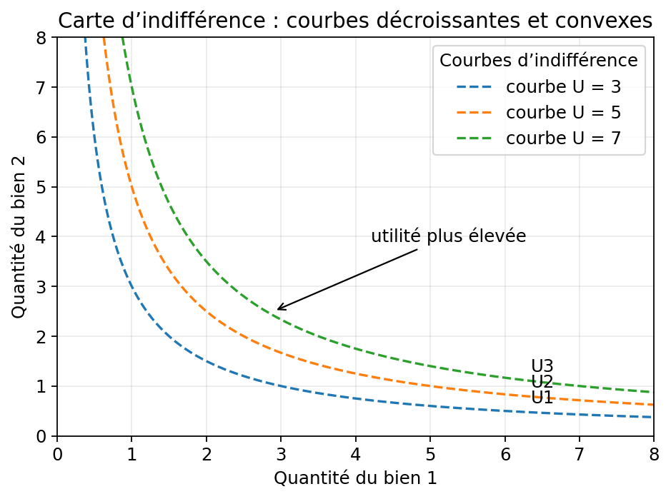
Microéconomie — Théorie du consommateur
Version V5 — cours autonome avec graphiques intégrés
Cible de lecture : personne débutante en économie, mais à l’aise avec les raisonnements abstraits et avec peu de temps pour réviser.
Mode d’emploi
Cette version est conçue pour servir à la fois de cours et de support de révision rapide.
Le fil du notebook suit l’ordre original du cours.
Comment l’utiliser efficacement :
- faire un premier passage rapide en lisant l’idée générale de chaque chapitre et les schémas ;
- faire un second passage ciblé sur les formules et les distinctions importantes ;
- utiliser la schémathèque finale et le formulaire pour la révision express.
Les graphiques sont générés directement dans le notebook et aussi sauvegardés dans microeco_v5_figures.
Export recommandé :
jupyter nbconvert --to html cours_microeconomie_consommateur_v5_notebook_autonome.ipynbPuis ouvrir le HTML et imprimer en PDF.
L’export PDF direct est possible avec :
jupyter nbconvert --to pdf cours_microeconomie_consommateur_v5_notebook_autonome.ipynbmais il peut nécessiter LaTeX.
Table des matières
- Chapitre 0 — Motivation : pourquoi étudier le consommateur ?
- Chapitre 1 — Préférences, paniers et axiomes
- Chapitre 2 — Fonction d’utilité et courbes d’indifférence
- Chapitre 3 — TMS, utilités marginales et formes de préférences
- Chapitre 4 — Contrainte budgétaire
- Chapitre 5 — Choix optimal du consommateur
- Chapitre 6 — Demande individuelle et fonctions de demande
- Chapitre 7 — Élasticités
- Chapitre 8 — Effet prix, effet revenu, effet substitution
- Chapitre 9 — Biens normaux, inférieurs, Giffen, luxe, nécessité
- Chapitre 10 — Préférences révélées
- Chapitre 11 — Arbitrage travail-loisir
- Chapitre 12 — Choix intertemporel : consommer aujourd’hui ou demain
- Chapitre 13 — Capital humain et durée d’étude
- Chapitre 14 — Choix en univers risqué
- Schémathèque récapitulative
- Formulaire concours
- Erreurs fréquentes à éviter
- Checklist de couverture des notes
Chapitre 0 — Motivation : pourquoi étudier le consommateur ?
Question du chapitre
Tu as 6 euros. Un café coûte 2 € et un livre coûte 5 €. Tu voudrais les deux — mais ça fait 7 €. Comment choisir ?
Idée à comprendre d’abord
Derrière cette question banale se cache le programme de tout ce cours : trouver le meilleur choix possible compte tenu des contraintes. Ce problème a toujours la même structure en deux ingrédients.
| Ingrédient | Ce qu’il représente | Ce qu’on modélise |
|---|---|---|
| Préférences | Ce que le consommateur veut | Relation de préférence → fonction d’utilité |
| Contrainte | Ce qu’il peut vraiment acheter | Droite de budget |
L’optimum est à l’intersection : le meilleur panier parmi ceux qui sont accessibles. Tout le cours décline ce schéma dans différents contextes.
Ce que ce cadre permet d’expliquer
- pourquoi une hausse de prix réduit souvent la demande ;
- pourquoi certains biens réagissent plus au revenu que d’autres ;
- pourquoi une hausse de salaire peut augmenter ou réduire l’offre de travail ;
- pourquoi un individu épargne ou s’endette ;
- pourquoi un individu accepte ou refuse un risque ;
- pourquoi l’éducation peut être vue comme un investissement en capital humain.
Carte mentale du cours
\[ \underbrace{\text{Préférences}}_{\text{Ch.\,1–3}} \;\longrightarrow\; \underbrace{\text{Contrainte}}_{\text{Ch.\,4}} \;\longrightarrow\; \underbrace{\text{Optimum}}_{\text{Ch.\,5–6}} \;\longrightarrow\; \underbrace{\text{Demande \& variations}}_{\text{Ch.\,7–10}} \;\longrightarrow\; \underbrace{\text{Extensions}}_{\text{Ch.\,11–14}} \]
Exemple pour parcourir les étapes — Alice et ses cafés :
| Étape | Question | Réponse du modèle |
|---|---|---|
| Préférences (Ch. 1–3) | Alice préfère-t-elle les cafés aux livres ? Dans quelle mesure accepte-t-elle d’en échanger un contre l’autre ? | On modélise ses goûts par une fonction d’utilité \(U(c, l)\) ; le taux marginal de substitution (TMS) mesure son taux d’échange subjectif. |
| Contrainte (Ch. 4) | Alice a 12 € par semaine, le café coûte 2 €, le livre 4 €. Quels paniers peut-elle vraiment acheter ? | La droite de budget \(2c + 4l = 12\) délimite son ensemble des choix possibles. |
| Optimum (Ch. 5–6) | Parmi tous ces paniers, lequel choisit-elle ? | À l’optimum, son taux d’échange subjectif (TMS) égale le taux imposé par le marché : \(TMS = p_c/p_l = 1/2\). |
| Demande & variations (Ch. 7–10) | Le prix du café monte à 3 €. Comment sa consommation change-t-elle ? | On décompose l’effet prix en effet de substitution (café plus cher → elle en prend moins) et effet revenu (pouvoir d’achat réel réduit). |
| Extensions (Ch. 11–14) | Alice doit aussi décider combien d’heures travailler pour gagner ces 12 €. Comment le salaire influence-t-il son arbitrage travail/loisir ? | Le salaire est le coût d’opportunité du loisir ; une hausse de salaire peut paradoxalement réduire ses heures travaillées. |
Chaque bloc s’appuie sur le précédent. Si un concept du chapitre 8 semble obscur, chercher d’abord sa racine dans les chapitres 4 ou 5.
Ce qu’il faut maîtriser en priorité
- Le niveau économique : comprendre pourquoi le consommateur se comporte ainsi — arbitrage, contrainte, effets substitution et revenu. C’est le niveau le plus discriminant en copie de concours.
- Le niveau graphique : courbes d’indifférence, droite de budget, optimum, déplacements — indispensable pour illustrer et contrôler.
- Le niveau analytique : maximisation sous contrainte, taux marginal de substitution (TMS), élasticités, équation de Slutsky — exigé pour les questions de cours formelles et les calculs.
Erreur à éviter
Ne pas croire que « rationnel » signifie « égoïste ». La rationalité du modèle est une hypothèse de cohérence des choix : le consommateur sait ce qu’il préfère et ses choix ne se contredisent pas. Elle n’interdit pas la générosité ou l’altruisme — il suffit de les intégrer dans les préférences.
Chapitre 1 — Préférences, paniers et axiomes
Question du chapitre
Avant de parler de budget et d’optimum, comment dire qu’un panier est préféré à un autre ?
Idée à comprendre d’abord
La théorie du consommateur commence par une chose très simple : comparer des paniers de consommation. On ne suppose pas que le consommateur est moralement bon ou psychologiquement transparent. On suppose seulement que ses choix peuvent être représentés de manière cohérente.
1.1. Panier de consommation
Un panier de consommation est un vecteur :
\[ X=(x_1,x_2) \]
où \(x_1\) et \(x_2\) sont les quantités consommées des biens 1 et 2.
Avec \(n\) biens :
\[ X=(x_1,x_2,\dots,x_n) \in \mathbb{R}_+^n \]
L’ensemble \(\mathbb{R}_+^n\) signifie que les quantités ne sont pas négatives.
1.2. Relation de préférence
On note :
| Notation | Signification |
|---|---|
| \(A \succ B\) | A est strictement préféré à B |
| \(A \sim B\) | A est indifférent à B |
| \(A \succeq B\) | A est faiblement préféré à B |
1.3. Axiomes classiques des préférences
À retenir d’abord : ces axiomes sont des conditions de cohérence. Ils servent à rendre les choix analysables.
1. Complétude
Pour deux paniers \(A\) et \(B\), le consommateur peut toujours les comparer :
\[ A \succeq B \quad \text{ou} \quad B \succeq A \]
Il peut préférer l’un, l’autre ou être indifférent.
2. Réflexivité
Tout panier est au moins aussi bon que lui-même :
\[ A \succeq A \]
3. Transitivité
Si :
\[ A \succeq B \quad \text{et} \quad B \succeq C \]
alors :
\[ A \succeq C \]
C’est l’hypothèse de cohérence minimale. Sans transitivité, le choix devient instable.
4. Monotonie (ou non-satiété locale)
Intuition d’abord. Si on te propose deux paniers identiques sauf que l’un contient en plus un café gratuit, tu préfères celui avec le café — même si tu n’en as pas très envie. Avoir plus d’un bien ne peut pas te rendre plus mal. C’est tout ce que dit cet axiome.
Formellement. Soient deux paniers \(A=(a_1,a_2)\) et \(B=(b_1,b_2)\). Si \(A\) contient au moins autant de chaque bien que \(B\), et strictement plus d’au moins un bien, alors \(A\) est strictement préféré à \(B\) :
\[ \bigl(a_1 \geq b_1 \text{ et } a_2 \geq b_2\bigr) \text{ avec au moins une inégalité stricte} \;\Rightarrow\; A \succ B \]
Exemple concret. \(A = (3 \text{ cafés},\; 2 \text{ livres})\) et \(B = (2 \text{ cafés},\; 2 \text{ livres})\). \(A\) contient tout ce que \(B\) contient, plus un café. Donc \(A \succ B\).
Ce que ça implique graphiquement. Les courbes d’indifférence sont décroissantes : pour rester au même niveau de satisfaction après avoir renoncé à une unité d’un bien, il faut en recevoir davantage de l’autre. Si elles étaient croissantes, avoir plus des deux biens ne changerait rien — ce qui contredirait la monotonie. (Le graphique de la carte d’indifférence au chapitre 2 illustre cela directement.)
Limite. Cet axiome suppose que le consommateur n’est jamais saturé. Pour des biens comme la nourriture en très grande quantité, c’est une approximation. On parle alors de non-satiété locale : elle vaut au moins dans un voisinage du panier considéré.
5. Convexité des préférences
Attention : c’est un axiome, pas un résultat. On suppose que les paniers moyens sont préférés aux paniers extrêmes — on ne le démontre pas à partir des axiomes précédents. Formellement, si :
\[ A \sim B \]
alors, pour \(\lambda \in [0,1]\) :
\[ \lambda A+(1-\lambda)B \succeq A \]
Interprétation : le consommateur apprécie en général la diversité plutôt que de se spécialiser totalement sur un seul bien. Cela produit des courbes d’indifférence convexes vers l’origine — et c’est précisément ce qui garantit l’existence d’un optimum intérieur dans la plupart des cas.
Erreur classique
Ne pas confondre ces axiomes avec une description psychologique réaliste du comportement. Ici, ils servent surtout à construire un cadre simple et cohérent.
Chapitre 2 — Fonction d’utilité et courbes d’indifférence
Question du chapitre
Il y a une infinité de paniers possibles. Au chapitre 1, on a vu qu’on pouvait comparer deux paniers grâce aux préférences. Mais comment classer tous les paniers entre eux sans faire cette comparaison deux à deux, panier par panier, à l’infini ?
Idée à comprendre d’abord
Il suffit d’une seule formule — par exemple \(U(x_1,x_2)=x_1 x_2\) — qui produit un nombre pour chaque panier. Deux paniers se comparent alors par leurs nombres : le plus grand est préféré.
2.1. Fonction d’utilité
Une fonction d’utilité associe un nombre réel à chaque panier :
\[ U : \mathbb{R}_+^n \to \mathbb{R} \]
Elle représente les préférences si :
\[ A \succeq B \Longleftrightarrow U(A) \geq U(B) \]
À retenir : un panier est mieux classé si et seulement si son utilité est plus haute. L’utilité classe, elle ne quantifie pas.
2.2. Utilité ordinale et non cardinale
En microéconomie standard, l’utilité est ordinale : elle classe les paniers, mais ne mesure pas une satisfaction absolue (elle n’est pas cardinale).
Si \(U\) représente les préférences, alors toute transformation strictement croissante \(f(U)\) les représente aussi.
Exemple : \(U(x_1,x_2)=x_1x_2\) et \(V(x_1,x_2)=\ln(x_1x_2)\) représentent les mêmes préférences, car \(\ln\) est croissante.
2.3. Courbe d’indifférence
Repère géométrique. La fonction \(U(x_1,x_2)\) est une surface dans l’espace à trois dimensions : les axes horizontaux représentent les quantités \(x_1\) et \(x_2\), et l’axe vertical représente le niveau d’utilité. Une courbe d’indifférence, c’est la coupe horizontale de cette surface à une hauteur fixée \(\bar U\) — autrement dit, la projection au sol de tous les points de la surface qui ont exactement la même altitude. C’est pourquoi on parle de courbe de niveau de \(U\).
Une courbe d’indifférence regroupe donc tous les paniers donnant le même niveau d’utilité :
\[ U(x_1,x_2)=\bar U \]
Le graphique ci-dessous est exactement cette carte de niveaux vue du dessus : chaque courbe est une ligne de niveau de la surface d’utilité, à une altitude fixée \(\bar U\). Une courbe plus éloignée de l’origine correspond à une ligne de niveau plus haute — donc à un niveau d’utilité plus élevé.
2.4. Propriétés habituelles des courbes d’indifférence
| Propriété | Justification |
|---|---|
| Décroissantes | Si on a moins d’un bien, il faut plus de l’autre pour rester indifférent |
| Convexes vers l’origine | Préférence pour la diversité (axiome de convexité) |
| Ne se croisent pas | Sinon contradiction avec la transitivité (voir l’explication juste après) |
| Plus éloignées de l’origine = plus préférées | « Éloignée de l’origine » signifie que la courbe passe par des points avec davantage des deux biens (l’origine est le point \((0,0)\), quantité nulle partout). Par monotonie, plus de biens = panier préféré. Sur le graphique : U3 > U2 > U1. |
2.5. Pourquoi deux courbes d’indifférence ne peuvent pas se croiser ?
Supposons que deux courbes \(\mathcal{C}_1\) et \(\mathcal{C}_2\) se croisent en un point A. À droite de A, \(\mathcal{C}_2\) passe au-dessus de \(\mathcal{C}_1\).
Choisissons alors :
- B : un point sur \(\mathcal{C}_1\), à droite de A.
- D : le point de \(\mathcal{C}_2\) situé directement au-dessus de B (même quantité de bien 1, mais plus de bien 2). Ce point existe car \(\mathcal{C}_2\) passe au-dessus de \(\mathcal{C}_1\) à droite de A.
On obtient alors trois faits :
- A et B sont sur \(\mathcal{C}_1\) → \(A \sim B\).
- A et D sont sur \(\mathcal{C}_2\) → \(A \sim D\).
- Par transitivité : \(B \sim D\).
Mais D contient la même quantité de bien 1 que B, et strictement plus de bien 2. Par monotonie : \(D \succ B\).
On a donc à la fois \(B \sim D\) et \(D \succ B\) — c’est impossible. \(\mathcal{C}_1\) et \(\mathcal{C}_2\) ne peuvent donc pas se croiser.
Erreur classique
La fonction d’utilité produit bien des nombres — c’est une fonction mathématique. Mais ces nombres ne mesurent pas une intensité psychologique : ils servent uniquement à classer les paniers. \(U(A) = 10\) et \(U(B) = 5\) signifie seulement que A est préféré à B, pas que A « procure le double de satisfaction ».
Graphique — Carte d’indifférence
Ce qu’il faut voir. Les trois courbes représentent trois niveaux d’utilité différents. Plus une courbe est éloignée de l’origine, plus elle correspond à un panier préféré.
Comment le lire vite. Choisis un point sur une courbe : si tu veux moins du bien 1, il faut plus du bien 2 pour rester au même niveau d’utilité. C’est pour cela que les courbes sont décroissantes.
Cas concret simple. Si tu passes de 4 unités de bien 1 à 2 unités de bien 1, il faut compenser avec davantage de bien 2 pour rester sur la même courbe. Le graphique montre donc un arbitrage, pas un niveau de bonheur mesuré.
Erreur à éviter. Ne lis pas l’utilité comme une grandeur psychologique. Ici, elle sert seulement à classer les paniers.
Note. Les courbes ci-dessous dont l’utilité est 3, 5 et 7 passent respectivement par les points \((1, 3)\), \((1, 5)\) et \((1, 7)\). C’est une conséquence de la fonction utilisée \(U(x_1,x_2)=x_1 x_2\), pour laquelle \(U(1, x_2)=x_2\). Avec une autre fonction d’utilité, cette coïncidence disparaîtrait.
Chapitre 3 — TMS, utilités marginales et formes de préférences
Question du chapitre
Au chapitre 2, on a vu comment comparer des paniers situés sur des courbes d’indifférence différentes : la courbe la plus éloignée de l’origine est préférée. Mais que se passe-t-il entre deux paniers situés sur la même courbe d’indifférence ?
Le consommateur est indifférent entre eux — par définition. Pourtant, il peut encore exprimer quelque chose : à quel taux est-il prêt à échanger une unité d’un bien contre de l’autre, tout en restant au même niveau de bien-être ? Comment mesurer cet arbitrage ?
Idée à comprendre d’abord
Le taux marginal de substitution mesure le compromis que le consommateur est prêt à faire le long d’une même courbe d’indifférence. Il traduit une logique de préférences, pas encore une logique de marché.
3.1. Utilités marginales
L’utilité marginale du bien 1 est :
\[ U_1'(x_1,x_2)=\frac{\partial U}{\partial x_1} \]
Elle indique de combien l’utilité varie quand \(x_1\) augmente un peu, toutes choses égales par ailleurs.
De même :
\[ U_2'(x_1,x_2)=\frac{\partial U}{\partial x_2} \]
3.2. Taux marginal de substitution
Sur une courbe d’indifférence, l’utilité reste constante, donc :
\[ dU=U_1' dx_1+U_2' dx_2=0 \]
D’où :
\[ \frac{dx_2}{dx_1}=-\frac{U_1'}{U_2'} \]
Lecture analytique : \(\dfrac{dx_2}{dx_1}\) est la pente de la courbe d’indifférence. Elle est négative (la courbe est décroissante). Le TMS est la valeur absolue de cette pente :
\[ TMS_{1,2}=\left|\frac{dx_2}{dx_1}\right|=\frac{U_1'}{U_2'} \]
Lecture économique : le TMS dit combien d’unités du bien 2 le consommateur est prêt à sacrifier pour obtenir une unité supplémentaire du bien 1, sans changer de niveau d’utilité.
3.3. Pourquoi le TMS est souvent décroissant
Avec des préférences convexes, plus le consommateur possède déjà le bien 1, moins il est prêt à abandonner du bien 2 pour en avoir encore plus.
C’est l’idée simple de la diversité préférée : un panier équilibré est souvent jugé meilleur qu’un panier très extrême.
3.4. Formes de préférences à reconnaître
1. Substituts parfaits
Modèle. Les deux biens sont interchangeables : le consommateur est toujours prêt à en échanger un contre l’autre au même taux fixe, peu importe les quantités déjà détenues. Un bien peut entièrement remplacer l’autre. Exemple typique : un consommateur qui estime qu’une bouteille de vin vaut exactement deux bières — ce taux d’échange reste le même qu’il ait déjà beaucoup ou peu des deux.
\[ U(x_1,x_2)=ax_1+bx_2 \]
Les utilités marginales sont constantes : \(U_1'=a\) et \(U_2'=b\). Le TMS est donc :
\[ TMS=\frac{U_1'}{U_2'}=\frac{a}{b} \qquad \left(=-\frac{dx_2}{dx_1}\right) \]
Le TMS est constant : les courbes d’indifférence sont des droites parallèles de pente \(-a/b\), et le taux de substitution ne dépend pas du panier consommé.
2. Compléments parfaits
Modèle. Les deux biens n’ont de valeur qu’ensemble, dans des proportions fixes : consommer davantage de l’un sans consommer davantage de l’autre n’améliore pas la situation. Exemple typique : des cadres de vélo (\(x_1\)) et des roues (\(x_2\)) — il faut exactement 2 roues par cadre pour assembler un vélo fonctionnel. Un cadre de plus sans roues supplémentaires est inutile, et une troisième roue sans cadre supplémentaire l’est tout autant. La proportion optimale est \(x_2 = 2x_1\), soit \(a=1,\, b=2\) dans la formule ci-dessous.
\[ U(x_1,x_2)=\min(ax_1,bx_2) \]
La fonction \(\min\) n’est pas différentiable au coude. Sur chaque branche :
- Si \(ax_1 < bx_2\) : \(x_1\) est le facteur limitant, \(U=ax_1\). Alors \(U_1'=a\) et \(U_2'=0\) : le bien 2 est en excès, son utilité marginale est nulle. Le \(TMS=\dfrac{a}{0}\to+\infty\) : aucune quantité de \(x_2\) ne peut compenser la perte d’une unité de \(x_1\).
- Si \(ax_1 > bx_2\) : \(x_2\) est le facteur limitant, \(U=bx_2\). Alors \(U_1'=0\) et \(U_2'=b\) : le bien 1 est en excès, son utilité marginale est nulle. Le \(TMS=\dfrac{0}{b}=0\) : le consommateur n’a besoin d’aucun \(x_2\) supplémentaire pour compenser la perte d’une unité de \(x_1\), car \(x_1\) n’apporte rien ici.
Le seul point économiquement pertinent est le coude : \(ax_1=bx_2\), soit \(x_2/x_1=a/b\). C’est là que le consommateur optimise : dépenser hors de cette proportion serait gaspiller du budget sur un bien qui n’augmente pas l’utilité, alors qu’acheter davantage des deux en proportion fixe permettrait d’atteindre une courbe d’indifférence plus élevée.
3. Préférences convexes — Cobb-Douglas
Modèle. Le consommateur valorise les deux biens et préfère la diversité : plus il possède déjà d’un bien, moins il est prêt à en sacrifier encore pour obtenir davantage de l’autre. C’est le cas standard des préférences convexes, avec un TMS qui varie le long de la courbe d’indifférence.
\[ U(x_1,x_2)=x_1^\alpha x_2^\beta \]
On calcule les utilités marginales :
\[ U_1'=\alpha\, x_1^{\alpha-1} x_2^{\beta}, \qquad U_2'=\beta\, x_1^{\alpha} x_2^{\beta-1} \]
Le TMS vaut :
\[ TMS=\frac{U_1'}{U_2'}=\frac{\alpha\, x_1^{\alpha-1} x_2^{\beta}}{\beta\, x_1^{\alpha} x_2^{\beta-1}}=\frac{\alpha\, x_2}{\beta\, x_1} \qquad \left(=-\frac{dx_2}{dx_1}\right) \]
Le TMS est décroissant en \(x_1\) : quand le consommateur a déjà beaucoup du bien 1, il est de moins en moins prêt à sacrifier du bien 2. C’est cohérent avec la convexité des courbes d’indifférence.
3.5. Cas particuliers utiles en concours
- Bien neutre : sa quantité n’affecte pas l’utilité.
- Bien indésirable : plus en consommer réduit l’utilité.
- Satiété : il existe un point idéal au-delà duquel consommer plus n’améliore plus la situation.
Erreur classique
Ne pas confondre le TMS avec le rapport des prix. Le premier vient des préférences ; le second vient du marché. Ils ne deviennent égaux qu’au moment de l’optimum intérieur.
Graphique — Substituts parfaits et compléments parfaits
Ce qu’il faut voir. La première figure montre des substituts parfaits : les courbes d’indifférence sont des droites, donc le consommateur accepte de remplacer un bien par l’autre à taux constant. La seconde montre des compléments parfaits : les courbes sont en L, donc les biens ne valent vraiment que s’ils sont consommés ensemble.
Cas concret simple. Substituts parfaits : deux marques d’eau minérale que tu juges équivalentes. Compléments parfaits : chaussure gauche et chaussure droite, ou café et sucre si tu les consommes toujours ensemble dans la même proportion.
Comment le lire vite. Si les courbes sont des droites, l’optimum est souvent en coin : on achète surtout le bien qui donne le meilleur rapport utilité / prix. Si les courbes sont en L, il faut repérer le coude : c’est là que se lit la bonne proportion.
Erreur à éviter. Ne pas appliquer mécaniquement la tangence partout. Elle est souvent inutile avec ces préférences particulières.

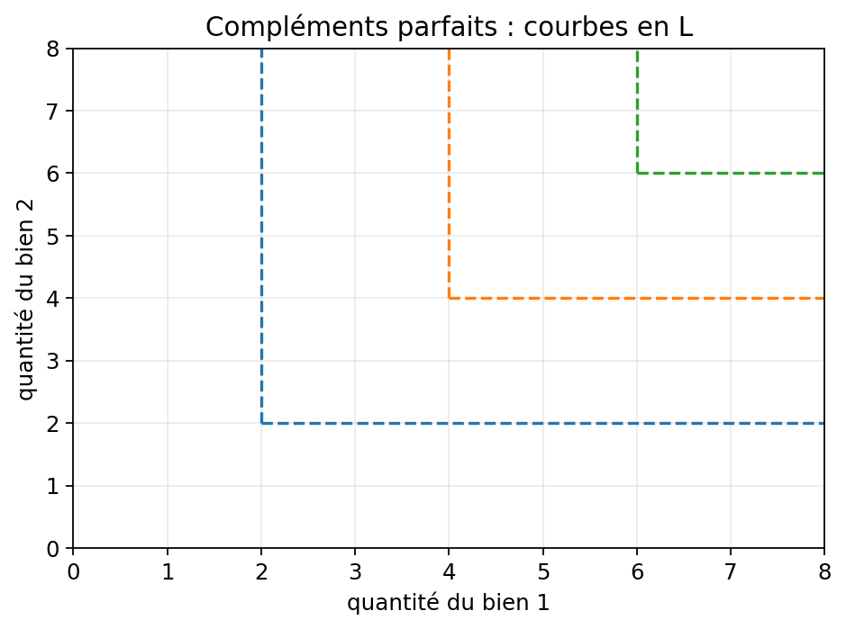
Chapitre 4 — Contrainte budgétaire
Question du chapitre
Quels paniers le consommateur peut-il effectivement acheter ?
Idée à comprendre d’abord
La contrainte budgétaire ne dit pas ce que le consommateur veut. Elle dit ce qu’il peut faire. Toute la suite du cours repose sur cette rencontre entre préférences et possibilités d’achat.
4.1. Équation de budget
Si le revenu est \(R\) et les prix sont \(p_1\) et \(p_2\), alors :
\[ p_1x_1+p_2x_2 \leq R \]
La frontière des paniers juste accessibles est :
\[ p_1x_1+p_2x_2=R \]
4.2. Intercepts et pente
Si tout le revenu est consacré au bien 1 :
\[ x_1=\frac{R}{p_1} \]
Si tout le revenu est consacré au bien 2 :
\[ x_2=\frac{R}{p_2} \]
En isolant \(x_2\), on obtient :
\[ x_2=\frac{R}{p_2}-\frac{p_1}{p_2}x_1 \]
La pente vaut donc :
\[ -\frac{p_1}{p_2} \]
Lecture analytique : la pente de la droite de budget est \(-p_1/p_2\) ; elle mesure la quantité de bien 2 à laquelle il faut renoncer pour obtenir une unité supplémentaire de bien 1.
Lecture économique : \(p_1/p_2\) est le prix relatif du bien 1 en unités de bien 2.
4.3. Comment la droite de budget se déplace
1. Hausse du revenu
Si \(R\) augmente et que les prix ne changent pas, la droite se déplace parallèlement vers l’extérieur.
2. Hausse de \(p_1\)
Si \(p_1\) augmente :
- l’intercept \(R/p_1\) diminue ;
- l’intercept \(R/p_2\) ne change pas ;
- la droite pivote vers l’intérieur autour de l’axe vertical.
3. Hausse de \(p_2\)
Le raisonnement est symétrique : cette fois, c’est l’intercept vertical qui diminue.
4.4. Ce qu’il faut voir immédiatement sur un graphique
Quand tu regardes une droite de budget, repère dans cet ordre :
- les deux intercepts ;
- la pente ;
- la cause d’un déplacement : revenu ou prix ;
- le sens du mouvement : translation ou rotation.
Erreur classique
Confondre une translation de la droite de budget avec une rotation. Le revenu modifie les deux intercepts à la fois ; la variation d’un seul prix fait pivoter la droite.
Graphique — Rotation vs translation de la contrainte budgétaire
Ce qu’il faut voir. Les deux types de déplacement de la droite de budget sont illustrés sur le même graphique :
- Rotation (baisse de \(p_1\)) : la droite pivote autour de l’axe vertical (axe du bien 2), car l’intercept \(R/p_2\) ne change pas mais l’intercept \(R/p_1\) augmente.
- Translation (hausse de \(R\)) : la droite se déplace parallèlement vers l’extérieur, car les deux intercepts augmentent dans la même proportion.
Cas concret. Revenu initial \(R=12\), \(p_1=2\), \(p_2=1\).
| Scénario | Changement | Intercept horizontal (\(R/p_1\)) | Intercept vertical (\(R/p_2\)) | Pente |
|---|---|---|---|---|
| Initial | — | 6 | 12 | \(-2\) |
| Baisse de \(p_1\) à 1 | Rotation | 12 | 12 (inchangé) | \(-1\) |
| Hausse de \(R\) à 18 | Translation | 9 | 18 | \(-2\) (inchangée) |
Comment le distinguer au premier coup d’œil. Si un intercept est fixe, c’est une rotation ; si les deux bougent dans la même direction, c’est une translation.
Erreur à éviter. Confondre les deux mouvements en copie : la variation d’un prix fait pivoter la droite, la variation du revenu la translate parallèlement.

Chapitre 5 — Choix optimal du consommateur
Question du chapitre
Parmi tous les paniers accessibles, lequel est retenu par le consommateur ?
Idée à comprendre d’abord
Le consommateur cherche le meilleur panier accessible. Graphiquement, c’est la courbe d’indifférence la plus élevée qu’il peut encore atteindre compte tenu de sa droite de budget.
5.1. Problème de maximisation
Le problème s’écrit :
\[ \max_{x_1,x_2} U(x_1,x_2) \]
On note \((x_1^*,x_2^*)\) la solution optimale, c’est-à-dire le panier qui maximise l’utilité sous la contrainte budgétaire.
sous la contrainte :
\[ p_1x_1+p_2x_2 \leq R \]
Si les deux biens sont désirables, le consommateur dépense tout son revenu à l’optimum :
\[ p_1x_1+p_2x_2=R \]
5.2. Optimum intérieur
Quand la solution n’est pas sur un bord, la courbe d’indifférence est tangente à la droite de budget. On obtient :
\[ TMS_{1,2}=\frac{p_1}{p_2} \]
ou encore :
\[ \frac{U_1'}{U_2'}=\frac{p_1}{p_2} \qquad \left(=-\frac{dx_2}{dx_1}\right) \]
Lecture économique : à l’optimum, le taux d’échange souhaité par le consommateur coïncide avec le taux d’échange imposé par le marché des biens, c’est-à-dire le rapport des prix \(p_1/p_2\). Le revenu \(R\) détermine jusqu’où s’étend la droite de budget, mais pas sa pente ; deux consommateurs avec des revenus différents font face au même taux d’échange marchand si les prix sont identiques.
5.3. Optimum en coin
L’optimum peut se trouver sur un bord si le consommateur achète un seul bien. C’est fréquent avec les substituts parfaits ou, plus généralement, quand la tangence ne fournit pas de solution admissible.
5.4. Méthode par Lagrangien
On peut écrire :
\[ \mathcal{L}=U(x_1,x_2)+\lambda(R-p_1x_1-p_2x_2) \]
Les conditions du premier ordre sont :
\[ \frac{\partial U}{\partial x_1}=\lambda p_1 \]
\[ \frac{\partial U}{\partial x_2}=\lambda p_2 \]
\[ p_1x_1+p_2x_2=R \]
En divisant les deux premières équations, on retrouve la condition de tangence.
5.5. Exemple à savoir refaire : Cobb-Douglas
Si :
\[ U(x_1,x_2)=x_1^a x_2^b \]
alors :
\[ TMS=\frac{a}{b}\frac{x_2}{x_1} \]
Avec la contrainte budgétaire, on obtient :
\[ x_1^*=\frac{a}{a+b}\frac{R}{p_1} \]
\[ x_2^*=\frac{b}{a+b}\frac{R}{p_2} \]
À retenir : dans Cobb-Douglas, une part constante du revenu est affectée à chaque bien.
Méthode rapide en exercice
- Écrire la contrainte budgétaire.
- Calculer le TMS.
- Poser l’égalité \(TMS=p_1/p_2\) si l’optimum est intérieur.
- Utiliser la contrainte pour obtenir les quantités.
- Vérifier qu’on n’est pas en coin.
Erreur classique
Prendre la tangence comme une recette universelle. Elle vaut pour un optimum intérieur ; elle ne suffit pas quand les préférences sont particulières ou quand la solution est en coin.
Graphique — Optimum du consommateur
Ce qu’il faut voir. Le point optimal est le panier atteignable situé sur la courbe d’indifférence la plus élevée. Sur le graphique, c’est le point de tangence entre la droite budgétaire et une courbe d’indifférence.
Comment le lire vite. Repère d’abord la droite budgétaire, puis la courbe d’indifférence la plus haute encore accessible, puis le point où elles se touchent sans se couper. C’est là que le consommateur n’a plus intérêt à se déplacer.
Cas concret simple. Avec un revenu de 12, un prix du bien 1 égal à 2 et un prix du bien 2 égal à 1, le point retenu est ici \((3,6)\). Il utilise tout le budget sans sortir de l’ensemble atteignable.
Phrase de copie. À l’optimum intérieur, le consommateur égalise le taux auquel il accepte de substituer les biens et le taux auquel le marché permet cette substitution.
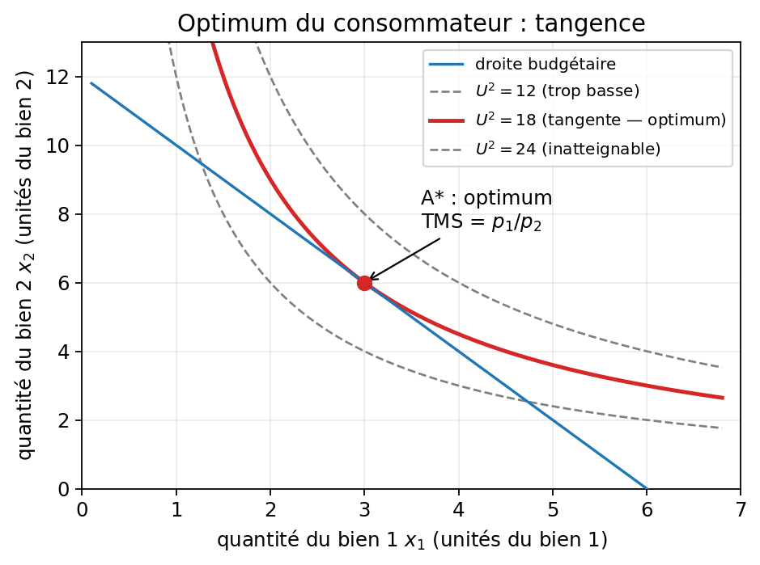
Chapitre 6 — Demande individuelle et fonctions de demande
Question du chapitre
Une fois l’optimum de consommation trouvé, comment décrire la quantité choisie quand les prix ou le revenu changent ?
Idée à comprendre d’abord
Jusqu’au chapitre 5, on cherchait l’optimum de consommation pour un revenu et des prix donnés. Ici, on change de question : on ne veut plus seulement un panier de consommation optimal, mais la règle qui donne ce panier quand \(p_1\), \(p_2\) ou \(R\) changent. Cette règle, c’est la fonction de demande.
6.1. Fonctions de demande
Pour le bien 1 :
\[ x_1^*=D_1(p_1,p_2,R) \]
Pour le bien 2 :
\[ x_2^*=D_2(p_1,p_2,R) \]
À retenir : une fonction de demande n’est pas une intention vague ; c’est une règle qui associe à chaque environnement de prix et de revenu une quantité choisie.
Autrement dit, \(x_1^*\) et \(x_2^*\) sont les composantes du panier de consommation optimal associé à des prix \((p_1,p_2)\) et un revenu \(R\) donnés. La nouveauté du chapitre 6 est qu’on les étudie comme des fonctions de ces variables : par exemple, quand \(p_1\) varie, à \(p_2\) et \(R\) fixés, on observe comment \(x_1^*\) et \(x_2^*\) changent, et non plus seulement un optimum de consommation isolé.
6.2. Courbe de demande
La courbe de demande relie le prix d’un bien à la quantité demandée, toutes choses égales par ailleurs.
En général :
\[ \frac{\partial D_1}{\partial p_1}<0 \]
Autrement dit, une hausse du prix tend à réduire la quantité demandée.
6.3. Courbe prix-consommation
Quand le prix d’un bien varie, à revenu et prix de l’autre bien constants, l’optimum de consommation se déplace. La courbe qui relie ces optimums de consommation successifs est la courbe prix-consommation.
Attention : cette courbe n’est pas tracée dans un repère prix-quantité, mais dans le plan des paniers \((x_1,x_2)\). Ici, c’est \(p_1\) qui varie, et chaque point de la courbe représente un panier optimal \((x_1^*,x_2^*)\).
Le graphique ajouté ci-dessous illustre ce déplacement quand le prix du bien 1 varie, à revenu et prix du bien 2 constants.
Elle sert de pont entre l’analyse graphique du consommateur et la construction de la courbe de demande.
6.4. Courbe revenu-consommation
Quand le revenu varie à prix constants, les droites de budget se déplacent parallèlement. Les optimums de consommation successifs forment la courbe revenu-consommation.
Cette courbe permet de voir si un bien devient plus ou moins demandé quand le revenu augmente.
6.5. Courbe d’Engel
La courbe d’Engel relie directement le revenu à la quantité demandée d’un bien.
- pente positive : bien normal ;
- pente négative : bien inférieur ;
- pente très forte : bien de luxe possible.
Méthode de lecture
Quand un exercice parle de demande, demande-toi toujours :
- qu’est-ce qui varie : prix ou revenu ?
- est-ce qu’on lit une demande, une courbe prix-consommation ou une courbe d’Engel ?
- quel type de bien cela suggère-t-il ?
Erreur classique
Confondre la courbe de demande avec la courbe d’Engel. La première relie quantité et prix ; la seconde relie quantité et revenu.
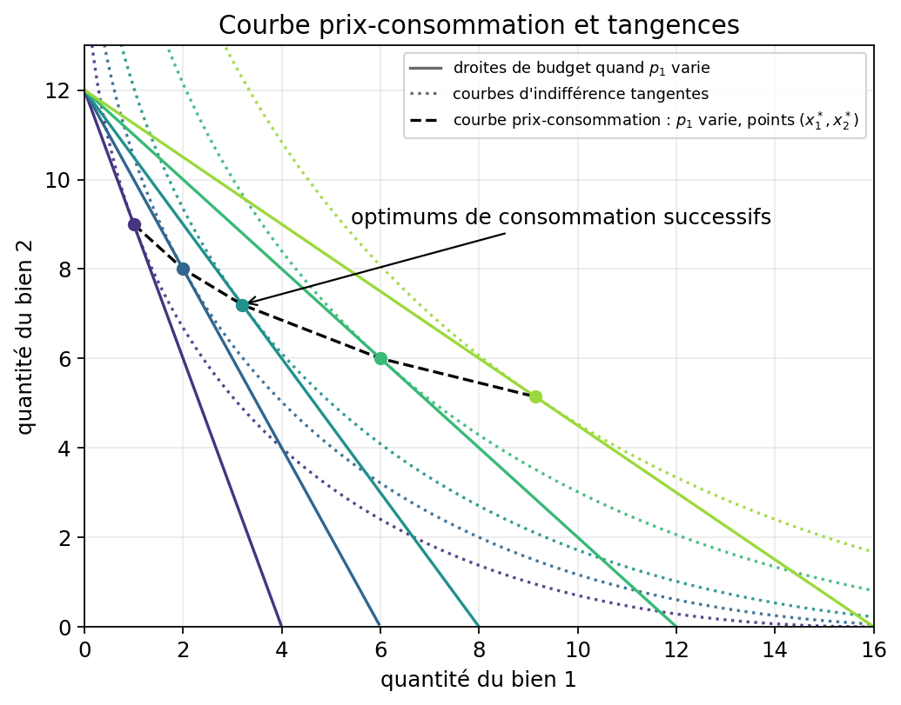
Chapitre 7 — Élasticités
Question du chapitre
Comment mesurer proprement la sensibilité de la demande à un prix, à un revenu ou à un autre prix ?
Idée à comprendre d’abord
Une dérivée mesure comment une variable réagit à la variation d’une autre. Mais elle doit s’interpréter en fonction des unités choisies et du point où on la considère : une hausse de 500 n’a pas le même sens si un bonus passe de 500 à 1 000 couronnes suédoises, ou de 10 000 à 10 500 euros. Une dérivée seule est donc difficile à interpréter et ne permet pas, en général, de comparer proprement des marchés différents.
L’élasticité corrige cela en rapportant chaque variation à son niveau de départ. On raisonne alors avec des variations relatives : on obtient ainsi une mesure sans unité, ce qui permet de comparer des marchés, des pays ou des périodes de tailles très différentes.
7.1. Définition générale
\[ \text{élasticité} = \frac{\%\,\text{variation de la variable expliquée}}{\%\,\text{variation de la variable explicative}} \]
Au point considéré, si la variable expliquée \(y\) dépend de la variable explicative \(x\), cette définition se réécrit aussi :
\[ \varepsilon_{y,x}=\frac{dy}{dx}\frac{x}{y} \]
Autrement dit, l’élasticité est la dérivée corrigée par le rapport des niveaux \(x/y\) au point où l’on se place.
7.2. Élasticité-prix directe
Pour la demande, la question devient : si le prix augmente de 1 %, de combien de % la quantité demandée varie-t-elle ?
Au point considéré sur la courbe:
\[ \varepsilon_{x,p}=\frac{\partial x}{\partial p}\frac{p}{x} \]
En général, elle est négative, car la demande baisse quand le prix augmente.
On retient souvent la valeur absolue :
- \(|\varepsilon|>1\) : demande élastique ;
- \(|\varepsilon|<1\) : demande peu élastique ;
- \(|\varepsilon|=1\) : élasticité unitaire.
7.3. Élasticité-revenu
Pour le revenu, la question devient : si le revenu augmente de 1 %, de combien de % la quantité demandée varie-t-elle ?
Au point considéré :
\[ \varepsilon_{x,R}=\frac{\partial x}{\partial R}\frac{R}{x} \]
Elle sert à classer les biens :
- \(\varepsilon_{x,R}>0\) : bien normal ;
- \(\varepsilon_{x,R}<0\) : bien inférieur ; quand le revenu augmente, la demande de ce bien baisse, car le consommateur se reporte vers d’autres biens. Exemple : des pates premier prix ou un produit bas de gamme qu’on achete surtout quand le budget est serre ;
- \(0<\varepsilon_{x,R}<1\) : bien nécessaire ; quand le revenu augmente, la demande augmente aussi, mais moins vite que le revenu. Exemple : le pain, le sel ou l’electricite de base, dont on consomme un peu plus quand on est plus riche, mais pas massivement ;
- \(\varepsilon_{x,R}>1\) : bien de luxe ; quand le revenu augmente, la demande augmente plus vite que le revenu. Exemple : les repas au restaurant, les voyages ou les vetements haut de gamme, sur lesquels on depense beaucoup plus des que le revenu monte.
7.4. Élasticité-prix croisée
Pour l’élasticité-prix croisée, la question devient : si le prix du bien \(j\) augmente de 1 %, de combien de % la quantité demandée du bien \(i\) varie-t-elle ?
Au point considéré :
\[ \varepsilon_{x_i,p_j}=\frac{\partial x_i}{\partial p_j}\frac{p_j}{x_i} \]
Son signe donne une information utile :
- \(>0\) : biens substituables ;
- \(<0\) : biens complémentaires ;
- \(=0\) : biens indépendants.
7.5. Lien avec la recette totale
Si :
\[ RT(p)=p \times q(p) \]
Ici, \(RT(p)\) désigne la recette totale associée au prix \(p\), et \(q(p)\) la quantité demandée lorsque ce prix est égal à \(p\).
alors une hausse de prix :
- réduit la recette si la demande est élastique ;
- augmente la recette si la demande est inélastique ;
- laisse la recette stationnaire au voisinage de l’élasticité unitaire.
Erreur classique
Oublier le signe et commenter seulement la valeur absolue. Pour la demande, le signe a un sens économique ; la valeur absolue sert ensuite à juger l’intensité de la réaction.
Graphique — Demande et élasticité
Ce qu’il faut voir. Les deux courbes sont décroissantes. La courbe la plus plate (la moins inclinée) correspond à une demande plus élastique : pour la même variation de prix, la quantité réagit davantage. Avec le prix en ordonnée et la quantité en abscisse, une courbe verticale = demande rigide ; une courbe horizontale = demande infiniment élastique.
Comment le lire vite. Trace mentalement une ligne horizontale à un niveau de prix donné et fais monter ce prix d’un cran. La courbe dont la quantité recule le plus vers la gauche est la plus élastique.
Cas concret simple. L’électricité à domicile a peu de substituts : une hausse de tarif change peu la consommation (courbe raide). L’eau en bouteille d’une marque donnée en a beaucoup : la même hausse de prix fait fuir les consommateurs vers une autre marque (courbe plate = plus élastique).
Erreur à éviter. Ne pas confondre la pente de la courbe et l’élasticité. Sur une même courbe de demande linéaire, l’élasticité \(\varepsilon = -b \cdot p/x\) varie selon le point : elle est forte (en valeur absolue) en haut à gauche et faible en bas à droite. La pente reste constante.

Chapitre 8 — Effet prix, effet revenu, effet substitution
Question du chapitre
Quand le prix d’un bien change, comment décomposer exactement la variation de la quantité demandée entre effet substitution et effet revenu ?
Idée à comprendre d’abord
Le chapitre 7 mesurait l’ampleur de la réaction de la demande avec l’élasticité. Ici, on change de question : on ne cherche plus seulement à savoir de combien la quantité varie, mais pourquoi elle varie.
Une variation de prix agit de deux façons en même temps :
- elle modifie le prix relatif du bien ;
- elle modifie le pouvoir d’achat réel du consommateur.
C’est pourquoi on décompose l’effet total en deux morceaux.
8.1. Décomposition de base
\[ \text{effet prix} = \text{effet substitution} + \text{effet revenu} \]
8.2. Effet substitution
Quand \(p_1\) augmente, le bien 1 devient relativement plus cher. Le consommateur tend donc à se reporter vers les autres biens.
Pour le bien dont le prix augmente, l’effet substitution est toujours orienté dans le sens d’une baisse de la demande.
8.3. Effet revenu
Une hausse du prix du bien 1 reduit le pouvoir d’achat reel du consommateur.
Pour isoler l’effet revenu, on oublie un instant que le bien 1 est devenu relativement plus cher et on regarde seulement l’effet de cet appauvrissement.
La question devient alors : parce qu’il est plus pauvre, le consommateur veut-il acheter plus ou moins du meme bien 1 ?
Si le bien 1 est normal, il en veut moins ; s’il est inferieur, il peut en vouloir plus parce qu’il renonce a des biens plus chers ; mais, en general, l’effet substitution domine quand meme, sauf dans le cas rare du bien de Giffen.
Exemple d’un bien de Giffen: un menage tres pauvre vit surtout de riz et achete parfois un peu de viande. Si le prix du riz augmente, il n’a presque plus les moyens d’acheter de viande ; pour simplement continuer a se nourrir, il reduit fortement la viande et achete finalement encore plus de riz, meme devenu plus cher.
8.4. Décomposition de Hicks
L’intention de Hicks est d’isoler un effet substitution aussi pur que possible.
Concretement, on part du panier optimal initial A, qui donne un certain niveau de satisfaction. Puis on imagine que le prix change, mais qu’on ajuste fictivement le revenu du consommateur juste assez pour qu’il puisse encore atteindre la meme courbe d’indifference qu’au point A.
Le “meme niveau d’utilite” designe donc simplement le niveau de satisfaction associe au choix initial, avant la variation de prix. On ne cherche pas a conserver le meme panier : on cherche a conserver la meme satisfaction, avec les nouveaux prix.
On peut alors dire : ce qui change d’abord vient du prix relatif seul ; ce qui reste vient de l’effet revenu.
8.5. Décomposition de Slutsky
L’intention de Slutsky est de separer les deux effets avec une regle plus concrete.
On change le prix relatif, mais on compense le revenu de sorte que l’ancien panier reste achetable aux nouveaux prix.
Les deux décompositions racontent donc la meme histoire, mais Hicks raisonne en niveau d’utilite, tandis que Slutsky raisonne en pouvoir d’achat de l’ancien panier.
8.6. Équation de Slutsky
Pour le bien \(i\) et le prix du bien \(j\) :
\[ \frac{\partial x_i}{\partial p_j} = \frac{\partial h_i}{\partial p_j} - x_j \frac{\partial x_i}{\partial R} \]
- \(x_i\) : demande marshallienne ;
- \(h_i\) : demande compensée ;
- premier terme : effet substitution ;
- second terme : effet revenu.
Pour le prix propre, l’effet substitution compensé reste négatif :
\[ \frac{\partial h_i}{\partial p_i}<0 \]
Erreur classique
Dire que l’effet substitution et l’effet revenu vont toujours dans le même sens. C’est vrai pour un bien normal, pas pour un bien inférieur.
Graphique — Décomposition de Hicks
Ce qu’il faut voir. Le passage de A à C est l’effet prix total. On le découpe en deux étapes : de A à B, l’effet substitution ; de B à C, l’effet revenu.
Comment le lire vite. Ici, la droite compensée de Hicks est choisie pour laisser au consommateur le meme niveau d’utilite qu’en A. Le point B reste donc sur la meme courbe d’indifference que A, mais avec la nouvelle pente de budget.
Cas concret simple. Si le prix du bien 1 augmente, le budget devient plus raide. Le consommateur passe d’abord de A vers B parce que le bien 1 est devenu relativement plus cher, puis de B vers C parce que son pouvoir d’achat reel baisse.
Erreur à éviter. Dans Hicks, B doit etre sur la meme courbe d’indifference que A. Si B est sur une autre courbe, on ne voit plus un effet substitution pur.
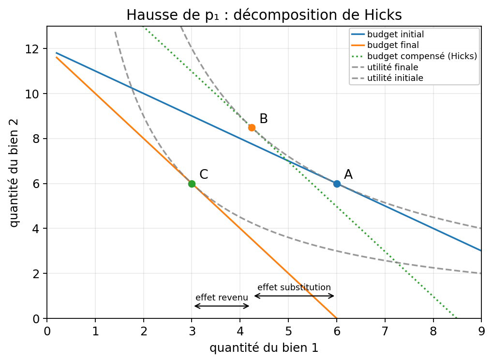
Graphique — Décomposition de Slutsky
Ce qu’il faut voir. Le point final C est le meme que dans Hicks, mais le point intermediaire B n’est pas defini de la meme facon.
Comment le lire vite. Ici, la droite compensée de Slutsky est choisie pour que l’ancien panier A reste juste achetable apres la hausse de prix. Le point B se lit alors comme le nouvel optimum sur cette droite compensée.
Cas concret simple. Comme le consommateur peut encore acheter A aux nouveaux prix, la compensation est en general plus forte que chez Hicks. B se situe donc souvent sur une courbe d’indifference plus élevée que celle de A.
Erreur à éviter. Dans Slutsky, on ne cherche pas a garder la meme utilite qu’en A. On cherche seulement a garder le meme pouvoir d’achat du panier initial.
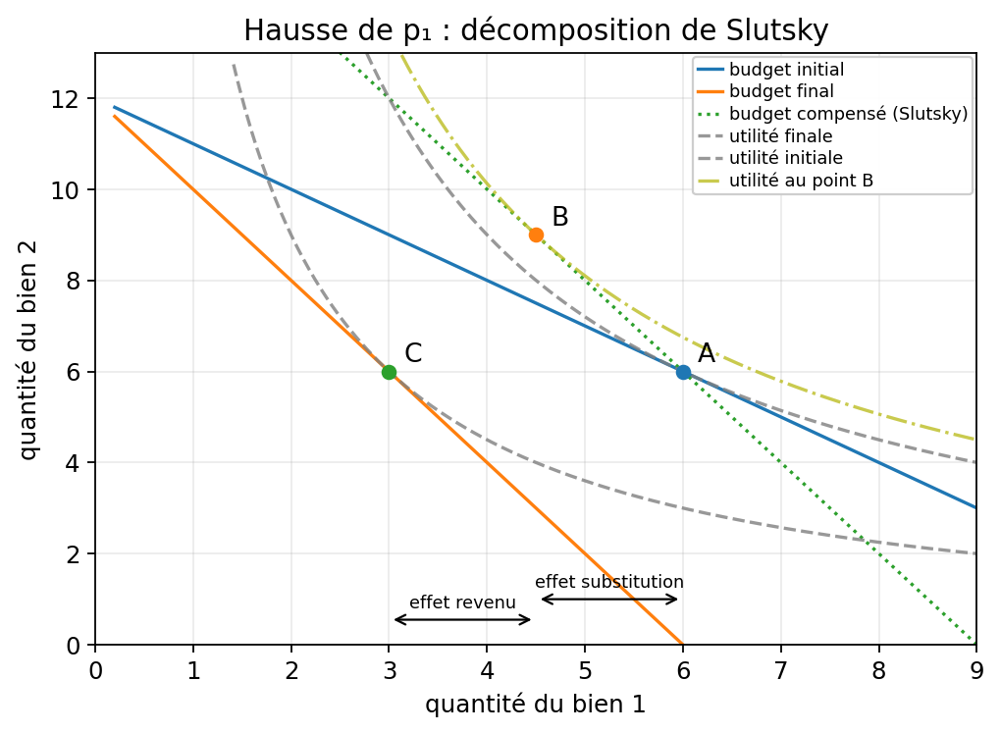
Chapitre 9 — Biens normaux, inférieurs, Giffen, luxe, nécessité
Question du chapitre
Comment classer un bien à partir de la réaction de sa demande au revenu ou au prix ?
Autrement dit, on reprend ici les classifications liées aux élasticités du chapitre 7, en les rassemblant dans une typologie des biens.
Idée à comprendre d’abord
Tous les biens ne réagissent pas de la même façon à une hausse de revenu ou à une hausse de prix. La nature du bien se lit dans le signe et l’intensité des effets précédents.
9.1. Bien normal
Un bien est normal si sa demande augmente avec le revenu :
Ici, on utilise la dérivée \(\partial x / \partial R\) plutôt que l’élasticité, car pour \(x>0\) et \(R>0\), elle a le même signe que \(\varepsilon_{x,R}\). Comme on veut seulement savoir si la demande monte ou baisse avec le revenu, cette information de signe suffit.
\[ \frac{\partial x}{\partial R}>0 \]
Quand son prix augmente, effet substitution et effet revenu poussent tous deux à la baisse de la demande.
9.2. Bien inférieur
Un bien est inférieur si sa demande baisse quand le revenu augmente :
\[ \frac{\partial x}{\partial R}<0 \]
Quand son prix augmente, l’effet substitution pousse encore à la baisse, mais l’effet revenu peut jouer en sens inverse.
9.3. Bien Giffen
Un bien Giffen est un bien inférieur extrême pour lequel l’effet revenu domine l’effet substitution. On peut alors observer :
\[ \frac{\partial x}{\partial p}>0 \]
Point clé : tout bien Giffen est inférieur, mais tout bien inférieur n’est pas Giffen.
9.4. Bien nécessaire et bien de luxe
On raisonne ici avec l’élasticité-revenu :
- \(0<\varepsilon_{x,R}<1\) : bien nécessaire ;
- \(\varepsilon_{x,R}>1\) : bien de luxe.
Un même bien peut changer de statut selon le niveau de revenu considéré.
9.5. Comment ne pas se perdre
- normal / inférieur : réaction au revenu ;
- nécessaire / luxe : intensité de la réaction au revenu ;
- Giffen : réaction atypique au prix due à un effet revenu très fort.
Erreur classique
Confondre bien inférieur et bien Giffen. Le second est un cas beaucoup plus rare et beaucoup plus exigeant que le premier.
Graphique — Courbes d’Engel : bien normal, nécessité, inférieur
Ce qu’il faut voir. Une courbe d’Engel relie le revenu (axe horizontal) à la quantité demandée (axe vertical). La pente suffit à classer le bien.
| Pente de la courbe d’Engel | Type de bien | Élasticité-revenu |
|---|---|---|
| Positive, forte | Normal / luxe | \(\varepsilon_{x,R} > 1\) |
| Positive, faible | Normal / nécessité | \(0 < \varepsilon_{x,R} < 1\) |
| Négative | Inférieur | \(\varepsilon_{x,R} < 0\) |
Cas concret simple. Quand le revenu double : tu vas bien plus souvent au restaurant (normal/luxe) ; tu n’achètes pas vraiment plus de sel (nécessité) ; tu achètes moins de pâtes premier prix et tu passes aux pâtes de qualité (inférieur).
Note sur Giffen. Un bien Giffen a bien une courbe d’Engel décroissante (il est inférieur sur le revenu), mais l’identification Giffen nécessite d’observer la réaction au prix : la demande monte quand le prix monte. Aucune courbe d’Engel seule ne suffit à conclure « ce bien est Giffen ».
Erreur à éviter. Confondre courbe d’Engel (revenu → quantité) et courbe de demande (prix → quantité). Ce sont deux dimensions différentes du comportement du consommateur.
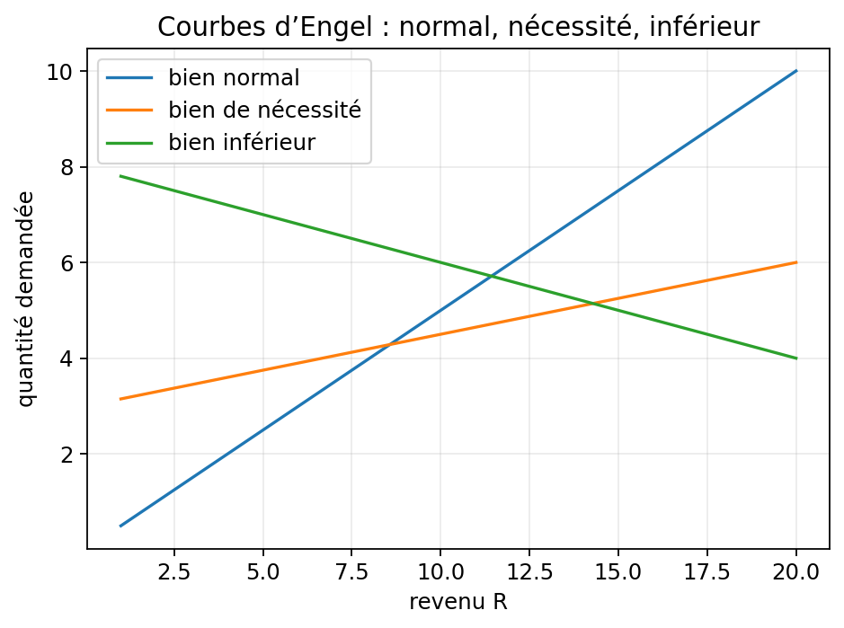
Chapitre 10 — Préférences révélées
Question du chapitre
Jusqu’ici, on a représenté les préférences par une fonction d’utilité ou par des courbes d’indifférence.
Mais, en pratique, on n’observe pas directement cette fonction : on observe surtout des choix.
Peut-on alors parler de préférences sans supposer directement une fonction d’utilité ?
Idée à comprendre d’abord
La théorie des préférences révélées change donc de point de départ. Au lieu de postuler d’abord une utilité, elle part des choix observés et demande : qu’est-ce que le comportement permet d’inférer sur les préférences ?
La question n’est pas d’abord d’écrire explicitement une fonction d’utilité a partir des choix observés. La question est d’établir, a partir de ces choix, un classement cohérent des paniers. Si ce classement est suffisamment cohérent, il pourra ensuite etre représenté par une fonction d’utilité ordinale.
10.1. Révélation directe
Si le consommateur choisit \(A\) alors que \(B\) était accessible avec le même budget, on dit que \(A\) est révélé préféré à \(B\) :
\[ A \succeq^R B \]
L’idée n’est pas psychologique : on n’observe pas les goûts directement, on observe les choix.
10.2. Axiome faible des préférences révélées
Si \(A\) est révélé préféré à \(B\), alors on ne doit pas observer ensuite \(B\) choisi alors que \(A\) est accessible dans une situation comparable.
Sinon, le comportement n’est plus cohérent avec l’idée d’une préférence stable.
10.3. Pourquoi c’est utile
Cette approche permet :
- de raisonner à partir de données observables ;
- d’éviter d’imposer d’emblée une fonction d’utilité ;
- de tester une certaine cohérence des choix.
10.4. Limites
La méthode suppose tout de même :
- des préférences suffisamment stables ;
- une information correcte ;
- des contextes comparables ;
- peu d’erreurs de décision.
Erreur classique
Croire qu’une préférence révélée est une preuve psychologique forte. C’est seulement une inférence à partir d’un choix observé dans un contexte donné.
Graphique — Préférences révélées
Ce qu’il faut voir. Si le consommateur choisit A alors que B était accessible avec le même budget, on conclut que A est révélé préféré à B.
Comment le lire vite. Regarde d’abord la zone budgétaire accessible, puis le panier effectivement choisi. Tout point dans la zone mais non choisi est, dans cette situation, moins bien classé que le point retenu.
Cas concret simple. Si tu pouvais acheter soit A soit B avec la même somme et que tu choisis A, ton choix révèle au moins que A te convient mieux que B dans ce contexte précis.
Erreur à éviter. Une préférence révélée n’est pas une vérité psychologique absolue : c’est une inférence tirée d’un choix observé dans un budget donné.
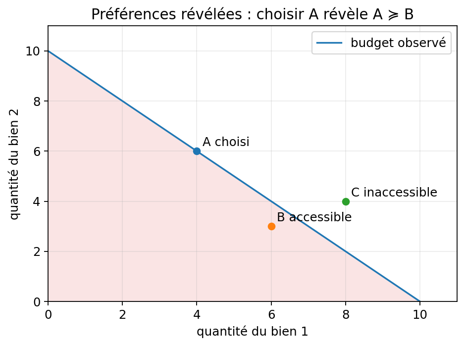
Chapitre 11 — Arbitrage travail-loisir
Question du chapitre
Comment un individu arbitre-t-il entre temps travaillé, temps libre et consommation ?
Idée à comprendre d’abord
Le loisir est un bien particulier : pour en consommer davantage, il faut renoncer à du revenu salarial. Le salaire joue donc le rôle de coût d’opportunité du loisir.
Même méthodologie
La façon d’aborder le problème est la même que dans les chapitres précédents : on étudie un arbitrage entre deux objets, on écrit la contrainte qui borne les choix possibles, on caractérise l’optimum d’utilité sous cette contrainte, puis on analyse la réaction du comportement lorsque les conditions changent. Ici, ces deux objets ne sont plus deux biens ordinaires, mais le loisir et la consommation.
| Étape du raisonnement | Chapitres 1–10 | Chapitre 11 |
|---|---|---|
| Objet de l’arbitrage | Ch. 1–2 : choix entre deux biens \(x_1\) et \(x_2\) | choix entre loisir \(L\) et consommation \(C\) |
| Contrainte | Ch. 4 : budget monétaire \(p_1 x_1 + p_2 x_2 = R\) | contrainte temps-revenu \(C = R_0 + w(T-L)\) |
| Condition d’optimum | Ch. 5 : \(TMS = p_1/p_2\) | \(TMS_{L,C} = w\) |
| Variations des conditions | Ch. 8 : variation d’un prix ou du revenu, puis décomposition en effet substitution et effet revenu | variation du salaire ou du revenu non salarial, puis décomposition en effet substitution et effet revenu (§ 11.4) |
| Lecture économique | Ch. 6–9 : demande de biens, élasticités, classification des biens | demande de loisir et offre de travail ; possibilité d’offre de travail rétro-courbée si le loisir est normal |
| Nature du modèle | arbitrage sans dotation : le revenu monétaire \(R\) est donné d’avance | arbitrage avec dotation : l’individu dispose d’un temps total \(T\) et éventuellement d’un revenu non salarial \(R_0\) |
Autre modèle de problème
Dans les chapitres précédents, on travaillait avec les grandeurs suivantes : \(x_1\) et \(x_2\) désignaient les quantités de biens consommées, \(p_1\) et \(p_2\) leurs prix, et \(R\) un revenu monétaire donné d’avance. Le consommateur arbitrait alors entre des biens à partir d’une contrainte budgétaire :
\[ R = p_1x_1 + p_2x_2 \]
Ici, les grandeurs changent : \(L\) désigne le loisir, \(C\) la consommation, \(T\) le temps total disponible, \(w\) le salaire horaire et \(R_0\) le revenu non salarial. On passe donc d’un arbitrage sans dotation, où le revenu est exogène, à un arbitrage avec dotation, où l’individu dispose d’abord d’un capital initial, ici, un capital de temps.
La contrainte qui s’écrivait auparavant
\[ R = p_1x_1 + p_2x_2 \]
s’écrit maintenant :
\[ R_0 + wT = C + wL \]
La dotation introduite ici est le temps total \(T\) : c’est la ressource initiale dont dispose l’individu avant tout choix. Le terme \(wT\) en est la valeur monétaire au salaire \(w\), et \(R_0 + wT\) représente donc les ressources initiales totales. Cela explique pourquoi une variation du salaire ne se lit pas exactement comme une simple variation de prix dans les chapitres précédents : elle modifie à la fois le coût d’opportunité du loisir et la valeur monétaire de la dotation en temps. La façon de travailler avec les graphiques pour anticiper les comportements change donc elle aussi : auparavant, on raisonnait surtout en termes de rotation ou de translation de la droite de budget ; ici, il faut aussi raisonner à partir de la dotation initiale.
11.1. Cadre de base
L’individu dispose d’un temps total \(T\) réparti entre loisir \(L\) et travail \(h\) :
\[ T=L+h \]
Avec un salaire horaire \(w\) et un revenu non salarial \(R_0\), la contrainte budgétaire s’écrit alors :
\[ C=R_0+w(T-L) \]
soit :
\[ C=(R_0+wT)-wL \]
11.2. Contrainte de budget travail-loisir
Dans le plan \((L,C)\), la pente de la droite de contrainte budgétaire vaut :
\[ -w \]
Plus le salaire est élevé, plus une heure de loisir coûte cher en consommation renoncée.
11.3. Choix optimal
L’individu maximise :
\[ U(C,L) \]
Quand l’optimum est intérieur, l’individu ne choisit ni le loisir complet ni le travail complet : il combine donc un peu de loisir et un peu de travail. Dans ce cas, la courbe d’indifférence est tangente à la droite de contrainte budgétaire. On a alors :
\[ TMS_{L,C}=w \]
Le taux auquel l’individu est prêt à échanger loisir et consommation s’aligne sur le salaire du marché.
11.4. Hausse du salaire
Une hausse de \(w\) produit deux effets :
- effet substitution : le loisir devient plus cher, donc on travaille davantage ;
- effet revenu : si le loisir est un bien normal, le revenu plus élevé pousse à vouloir plus de loisir.
L’effet total sur l’offre de travail est donc ambigu.
11.5. Offre de travail rétro-courbée
À bas salaire, l’effet substitution peut dominer. À haut salaire, l’effet revenu peut devenir plus fort. On peut alors obtenir une offre de travail qui se replie vers la gauche quand le salaire continue d’augmenter.
11.6. Salaire de réserve
Le salaire de réserve est le salaire minimal à partir duquel l’individu accepte d’offrir du travail.
Si le salaire de marché est inférieur à ce seuil, l’individu choisit le loisir complet.
11.7. Construction de l’offre individuelle de travail
En faisant varier le salaire \(w\) et en relevant l’offre de travail optimale \(h^*(w)=T-L^*(w)\) pour chaque niveau, on construit la courbe d’offre individuelle de travail dans le plan \((h, w)\).
- Quand l’effet substitution domine : la courbe est croissante — une hausse du salaire incite à travailler plus.
- Quand l’effet revenu domine à haut salaire : la courbe se retourne — une hausse du salaire conduit à travailler moins. On parle d’offre rétro-courbée (backward bending supply).
Le graphique suivant illustre ce retournement et le salaire de retournement \(w^*\) au-delà duquel l’effet revenu domine.
11.8. Élasticité de l’offre de travail
L’élasticité de l’offre de travail mesure la sensibilité du nombre d’heures offertes à une variation du salaire :
\[ \varepsilon_{h,w} = \frac{\partial h}{\partial w} \cdot \frac{w}{h} \]
- \(\varepsilon_{h,w} > 0\) : offre croissante (effet substitution domine) ;
- \(\varepsilon_{h,w} < 0\) : offre décroissante (effet revenu domine) ;
- \(\varepsilon_{h,w} \approx 0\) : offre rigide, peu sensible au salaire.
Les principaux facteurs qui influencent l’élasticité sont : le niveau du revenu non salarial \(R_0\), l’intensité de la préférence pour le loisir, les contraintes institutionnelles (temps partiel, conventions collectives, fiscalité).
11.9. Boîte d’Edgeworth appliquée au ménage
Dans un ménage à deux membres, la répartition du temps et des ressources peut se représenter dans une boîte d’Edgeworth. Chaque membre a ses propres préférences entre loisir et consommation. La boîte fait apparaître :
- les allocations efficaces au sens de Pareto — la courbe des contrats — le long desquelles on ne peut améliorer le bien-être d’un membre sans réduire celui de l’autre ;
- la zone Pareto-supérieure aux dotations initiales ;
- les possibilités de négociation et de transferts intra-ménage.
Interprétation économique. L’efficacité intra-familiale est atteinte lorsqu’on se place sur la courbe des contrats. Elle dépend des salaires respectifs, des préférences et de la technologie de production domestique.
11.10. Économie de la famille
Becker (1965) : allocation du temps. Chaque membre du ménage alloue son temps entre travail marchand, production domestique et loisir. L’arbitrage dépend des avantages comparatifs de chaque membre, du niveau des salaires et de la productivité domestique.
Production domestique. Certaines activités (cuisine, garde d’enfants, entretien) produisent des biens domestiques qui substituent ou complètent la consommation marchande. L’arbitrage entre internalisation et recours au marché dépend des prix relatifs.
Spécialisation intra-ménage. Si un membre a un salaire plus élevé, il peut être efficace qu’il se spécialise dans le travail marchand pendant que l’autre se spécialise dans la production domestique — logique des avantages comparatifs appliquée au foyer.
Gronau (1977). Distingue trois usages du temps : travail marchand, travail domestique et loisir pur. Contrairement à Becker, le loisir n’entre pas dans la fonction de production domestique ; il s’agit d’un usage direct du temps par l’individu.
Limites. Ces modèles supposent une décision coopérative et une information partagée. Ils ne rendent pas compte des conflits d’intérêt, des inégalités de pouvoir intra-ménage ni des dynamiques de négociation.
Erreur classique
Penser qu’une hausse de salaire fait toujours travailler davantage. En réalité, tout dépend de l’arbitrage entre effet substitution et effet revenu.
Graphique — Arbitrage travail-loisir
Ce qu’il faut voir. Ici, le loisir est sur l’axe horizontal et la consommation sur l’axe vertical. Quand le salaire augmente, la contrainte devient plus pentue et pivote autour du point \((T,R_0)\), car le loisir coûte davantage en consommation renoncée tandis que le loisir complet laisse toujours la consommation égale à \(R_0\).
Cas concret simple. Si ton salaire horaire passe de 10 à 16, une heure de loisir coûte désormais 16 de consommation potentielle au lieu de 10. En revanche, si tu ne travailles pas du tout, ta consommation reste égale au revenu non salarial \(R_0\) : c’est ce qui explique le pivot du graphique.
Comment le lire vite. Repère d’abord le point fixe \((T,R_0)\), puis compare la pente des deux droites budgétaires. Ce graphique montre donc surtout comment la contrainte change quand le salaire augmente ; il ne montre pas encore, à lui seul, la décomposition entre effet substitution et effet revenu.
Point concours. Ce graphique montre bien le pivot de la contrainte, mais pas encore la séparation entre effet substitution et effet revenu. Pour aller plus loin, il faudrait appliquer une des méthodes de décomposition présentées au chapitre 8.
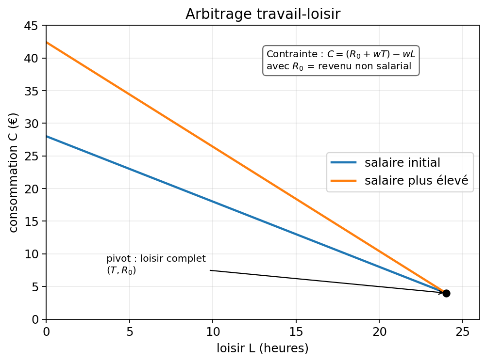
Offre de travail rétro-courbée
Le graphique représente l’offre individuelle de travail \(h^*(w)\) en fonction du salaire \(w\). À bas salaire, l’effet de substitution domine et l’offre croît. Au-delà du salaire de retournement \(w^*\), l’effet revenu domine et l’offre diminue : on parle d’offre rétro-courbée (backward bending). L’élasticité de l’offre passe de positive à négative en ce point.
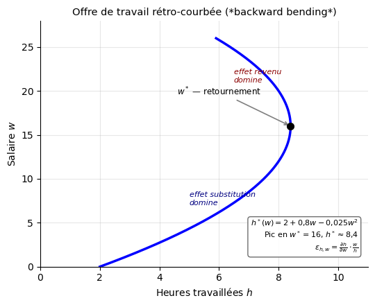
Chapitre 12 — Choix intertemporel : consommer aujourd’hui ou demain
Question du chapitre
Comment un individu arbitre-t-il entre consommation présente et consommation future ?
Idée à comprendre d’abord
Le taux d’intérêt est le prix relatif du présent en unités de futur. Épargner, c’est transférer des ressources vers demain ; emprunter, c’est faire l’inverse.
On retrouve ici la logique du chapitre 11 : un arbitrage entre deux usages d’une dotation initiale, puis l’étude de l’optimum et des effets d’une variation des conditions. La différence est qu’ici la dotation n’est plus du temps, mais un profil de revenus dans le temps.
Dans les chapitres précédents, le consommateur arbitrait entre deux biens à partir d’une contrainte budgétaire du type :
\[ R = p_1x_1 + p_2x_2 \]
Ici, les grandeurs changent : \(C_1\) désigne la consommation présente, \(C_2\) la consommation future, \(Y_1\) le revenu dont l’individu dispose aujourd’hui, \(Y_2\) le revenu dont il disposera demain, et \(r\) le taux d’intérêt. \(Y_1\) et \(Y_2\) sont donc deux sommes distinctes, attachées à deux dates différentes : par exemple, salaire de ce mois-ci pour \(Y_1\), salaire du mois prochain pour \(Y_2\). \(Y_2\) ne contient pas \(Y_1\). La contrainte devient alors :
\[ Y_1 + \frac{Y_2}{1+r} = C_1 + \frac{C_2}{1+r} \]
ou encore, dans le plan \((C_1,C_2)\) :
\[ C_2 = (1+r)(Y_1-C_1)+Y_2 \]
Le point \((Y_1,Y_2)\) est la dotation intertemporelle initiale. Une variation du taux d’intérêt ne modifie donc pas seulement le prix relatif du présent et du futur ; elle change aussi les possibilités de transfert autour de ce point de dotation.
12.1. Cadre de base
L’individu reçoit un revenu \(Y_1\) aujourd’hui et un revenu \(Y_2\) demain. Il choisit sa consommation présente \(C_1\) et sa consommation future \(C_2\).
S’il épargne aujourd’hui, il transfère une partie de ses ressources vers demain. S’il emprunte aujourd’hui, il augmente sa consommation présente au prix d’un remboursement futur.
12.2. Contrainte budgétaire intertemporelle
Avec deux périodes et un taux d’intérêt \(r\), on a :
\[ C_1+\frac{C_2}{1+r}=Y_1+\frac{Y_2}{1+r} \]
ou encore :
\[ C_2=(1+r)(Y_1-C_1)+Y_2 \]
La pente de la droite dans le plan \((C_1,C_2)\) vaut :
\[ -(1+r) \]
12.3. Épargnant ou emprunteur
- si \(C_1<Y_1\), l’individu épargne ;
- si \(C_1>Y_1\), il emprunte ;
- si \(C_1=Y_1\), il ne transfère pas de ressources entre les deux dates.
12.4. Optimum intertemporel
L’individu maximise :
\[ U(C_1,C_2) \]
Un optimum intérieur vérifie :
\[ TMS_{C_1,C_2}=1+r \]
Le consommateur arbitre donc entre présent et futur en comparant ses préférences au rendement de l’épargne.
12.5. Hausse du taux d’intérêt
Une hausse de \(r\) produit deux effets :
- effet substitution : la consommation présente devient plus coûteuse relativement à la consommation future, donc l’individu tend à reporter de la consommation vers demain ;
- effet revenu : il dépend de la position de l’individu par rapport au point de dotation. Un épargnant bénéficie d’une hausse de \(r\), tandis qu’un emprunteur en pâtit.
L’effet total sur la consommation présente et sur l’épargne dépend donc du statut initial de l’individu.
12.6. Valeur actualisée
La valeur actuelle d’une somme future \(S\) reçue dans une période est :
\[ \frac{S}{1+r} \]
Sur plusieurs périodes :
\[ VA=\sum_{t=0}^{T}\frac{Y_t}{(1+r)^t} \]
12.7. Courbe d’épargne
L’épargne de la période 1 vaut \(S = Y_1 - C_1\). En faisant varier \(r\), deux effets s’opposent :
- l’effet substitution d’une hausse de \(r\) incite à reporter la consommation vers demain : \(S\) augmente ;
- l’effet revenu dépend de la position de l’agent : pour un épargnant, une hausse de \(r\) augmente son revenu implicite, ce qui peut l’amener à consommer davantage aujourd’hui et donc à épargner moins ; pour un emprunteur, la hausse de \(r\) alourdit le coût de la dette et le contraint à réduire sa consommation présente.
La courbe d’épargne individuelle peut donc être croissante à bas taux d’intérêt et se retourner à haut taux. L’effet net sur l’épargne agrégée dépend de la composition de la population et de l’intensité relative des deux effets.
12.8. Théorie du revenu permanent (Friedman, 1957)
Friedman distingue deux composantes du revenu :
- le revenu permanent \(Y^P\) : composante stable et anticipée sur le long terme ;
- le revenu transitoire \(Y^T\) : composante temporaire et non anticipée (\(Y = Y^P + Y^T\)).
La consommation dépend principalement du revenu permanent :
\[ C = \alpha Y^P, \quad 0 < \alpha < 1 \]
Un choc de revenu transitoire (hausse de \(Y^T\)) entraîne surtout de l’épargne, car l’agent sait que ce surcroît est temporaire. Une hausse permanente (hausse de \(Y^P\)) entraîne principalement de la consommation supplémentaire. L’agent lisse sa consommation dans le temps en utilisant l’épargne et l’emprunt comme mécanismes de transfert entre périodes.
Ce cadre prolonge directement le modèle à deux périodes : l’individu choisit un profil de consommation aussi régulier que possible, compte tenu de ses anticipations de revenu futur et du taux d’intérêt.
12.9. Cohérence des choix intertemporels
Un agent est cohérent dans le temps si ses préférences au moment \(t\) concernant la période \(t+1\) restent les mêmes lorsque la période \(t+1\) arrive.
En pratique, on observe fréquemment des incohérences :
- biais de présent (present bias) : l’individu surpondère l’utilité immédiate par rapport à l’utilité future, même à court horizon ;
- incohérence temporelle : l’agent planifie d’épargner demain, mais ne le fait pas lorsque demain arrive.
Ces biais s’écartent du cadre rationnel standard et constituent le point de départ de l’économie comportementale appliquée à l’épargne. Ils expliquent notamment pourquoi des dispositifs d’épargne forcée ou des engagements préalables peuvent améliorer le bien-être.
Erreur classique
Oublier que l’effet d’une hausse de taux d’intérêt n’est pas le même pour un épargnant et pour un emprunteur.
Graphique — Choix intertemporel
À quoi sert la courbe en pointillés ? Elle représente la courbe d’indifférence qui passe par le point de dotation A.
Elle sert de repère : elle montre le niveau de satisfaction de l’agent s’il garde simplement sa dotation initiale, sans épargner ni emprunter.
Le point B montre au contraire le choix optimal permis par le marché intertemporel. La comparaison entre A et B fait donc apparaître le gain apporté par la possibilité d’arbitrer entre aujourd’hui et demain.
Lecture rapide : A est le point de départ ; si l’optimum est à gauche de A, l’agent épargne ; s’il est à droite, il emprunte.
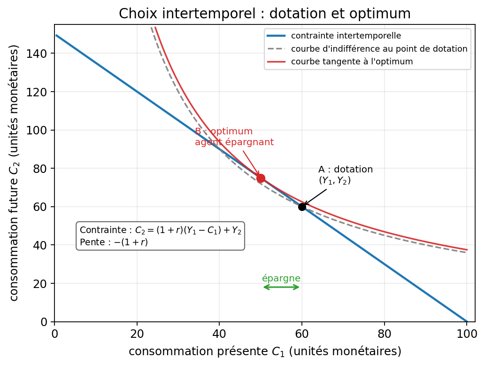
Courbe d’épargne individuelle
Le graphique montre comment l’épargne \(S = Y_1 - C_1\) réagit à une variation du taux d’intérêt \(r\). Pour un épargnant, les effets de substitution (hausse de \(r\) → reporter la consommation → \(S\uparrow\)) et de revenu (hausse de \(r\) → plus riche → \(C_1\uparrow\) → \(S\downarrow\)) s’opposent : la courbe peut se retourner. Pour un emprunteur, la hausse de \(r\) alourdit le coût de l’emprunt et comprime la consommation présente.
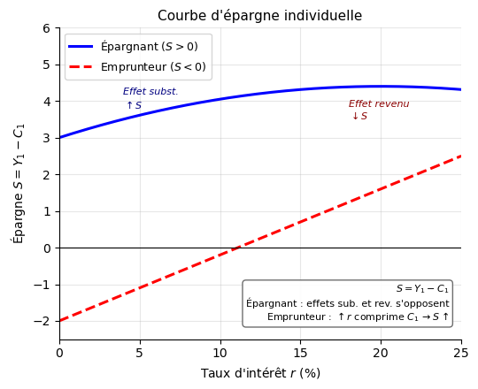
Chapitre 13 — Capital humain et durée d’étude
Question du chapitre
Pourquoi peut-on analyser l’éducation comme un investissement ?
Idée à comprendre d’abord
Faire des études a un coût aujourd’hui et peut rapporter davantage demain. Le raisonnement économique consiste à comparer des coûts présents et des gains futurs actualisés.
13.1. Coûts et gains
Coûts principaux :
- frais directs (scolarité, livres, logement) ;
- revenu auquel on renonce en n’entrant pas tout de suite sur le marché du travail (coût d’opportunité) ;
- effort, temps, incertitude.
Gains attendus :
- salaire futur plus élevé ;
- carrière plus stable ou plus mobile ;
- bénéfices non monétaires possibles.
13.2. Modèle de Becker
Le cadre de Becker (1964) formalise l’éducation comme un investissement en capital humain. L’individu arbitre entre entrer immédiatement sur le marché du travail ou prolonger ses études.
Arbitrage central. En étudiant une année de plus, l’individu renonce à un salaire présent mais obtient un surcroît de salaire futur. L’investissement est rentable si la valeur actualisée des gains futurs couvre les coûts totaux :
\[ \sum_{t=1}^{T}\frac{\Delta Y_t}{(1+r)^t} \geq C_0 \]
avec \(\Delta Y_t\) le gain de revenu futur et \(C_0\) le coût actualisé initial (frais directs + salaire renoncé).
Rendement privé de l’éducation. Le taux de rendement interne \(r^*\) est le taux qui égalise la valeur actualisée des gains et les coûts. Si \(r^* > r\) (taux du marché), il est rentable d’investir dans l’éducation.
13.3. Rôle du taux d’actualisation
Plus \(r\) est élevé, moins les gains futurs comptent dans la décision présente. Un individu très impatient ou très contraint financièrement aura donc moins d’incitation à prolonger ses études.
13.4. Limites du modèle
Le cadre du capital humain est utile, mais il ne suffit pas à tout expliquer :
- l’éducation peut aussi signaler des capacités préexistantes (théorie du signal, Spence 1973) ;
- les contraintes de crédit empêchent certains individus de financer des études longues même si elles sont rentables ;
- les informations sont imparfaites : les individus ne connaissent pas exactement leur rendement futur ;
- les trajectoires de revenus sont incertaines.
13.5. Pourquoi les individus n’ont pas le même optimum
La durée optimale d’études \(s^*\) diffère d’un individu à l’autre selon plusieurs facteurs :
- coûts directs : frais de scolarité et coût de la vie selon la filière ou le territoire ;
- coût d’opportunité : niveau du salaire auquel on renonce pour étudier ;
- rendement attendu : selon la filière, le diplôme ou les débouchés anticipés ;
- taux d’actualisation : un individu impatient (fort \(r\)) actualise davantage les gains futurs et s’arrête plus tôt ;
- contraintes de crédit : si l’accès à l’emprunt est limité, l’individu ne peut pas financer des études longues même si elles sont rentables ;
- risque et incertitude : incertitude sur les rendements futurs, sur l’environnement économique ou sur ses propres capacités ;
- origine sociale et information disponible : les individus issus de milieux défavorisés peuvent sous-estimer les rendements ou surestimer les coûts, faute d’information sur les débouchés ou les aides disponibles.
13.6. Variantes graphiques
Le schéma CM/RM permet d’illustrer l’effet de chaque paramètre sur la durée optimale \(s^*\) :
- Hausse du coût des études (déplacement de CM vers le haut) → \(s^*\) diminue ;
- Hausse du rendement attendu (déplacement de RM vers le haut) → \(s^*\) augmente ;
- Hausse du taux d’intérêt (RM actualisé se déplace vers le bas) → \(s^*\) diminue ;
- Meilleur accès au crédit (réduction du coût marginal de financement, CM vers le bas) → \(s^*\) augmente ;
- Préférences temporelles plus patientes (actualisation plus faible, RM actualisé vers le haut) → \(s^*\) augmente.
Dans tous les cas, la lecture graphique est la même : un déplacement de CM vers le haut ou de RM vers le bas réduit \(s^*\) ; l’inverse l’augmente. Le graphique suivant illustre les deux effets les plus courants (hausse du coût, hausse du rendement).
Erreur classique
Réduire l’éducation à un calcul purement financier. Le raisonnement économique est utile, mais il n’épuise pas toutes les dimensions du choix d’études. Confondre aussi rendement moyen (revenu total rapporté au coût total) et rendement marginal (gain d’une année d’étude supplémentaire) : c’est le rendement marginal, et non le rendement moyen, qui guide la décision à la marge.
Graphique — Capital humain et durée d’étude
Ce que montre le graphique. La durée d’étude optimale se lit au point \(s^*\) où le coût marginal des études rencontre le rendement marginal attendu.
Avant \(s^*\), prolonger les études reste rentable : le gain marginal attendu est supérieur au coût marginal. Après \(s^*\), c’est l’inverse.
Le graphique raisonne donc à la marge : il ne compare pas les revenus totaux, mais le gain et le coût d’une année d’étude supplémentaire.
Lecture rapide : à gauche de \(s^*\), étudier plus est avantageux ; à droite de \(s^*\), cela ne l’est plus.
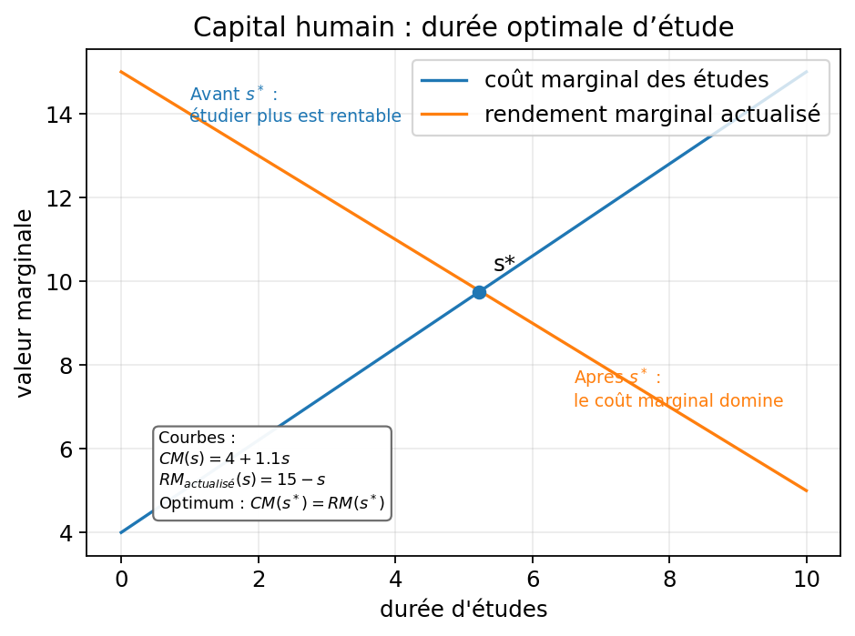
created 17 pngVariantes du schéma CM/RM : effets sur la durée optimale \(s^*\)
Trois chocs déplacent les courbes et modifient la durée optimale d’études :
- CM↑ (coût en hausse) → \(s^*\) diminue (triangle bleu) ;
- RM↑ (rendement en hausse) → \(s^*\) augmente (triangle vert) ;
- \(r\)↑ (patience moindre) → le RM actualisé se déplace vers le bas → \(s^*\) diminue.
Dans tous les cas, lire la comparaison statique : seule la position du croisement CM/RM change.
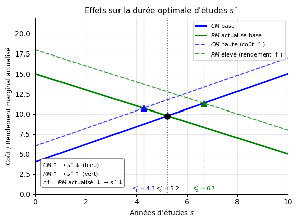
Chapitre 14 — Choix en univers risqué
Question du chapitre
Comment un individu compare-t-il des gains certains et des gains aléatoires ?
Idée à comprendre d’abord
En univers risqué, il ne suffit plus de regarder l’espérance monétaire. Il faut regarder l’espérance d’utilité — et distinguer \(U(E[X])\) de \(E[U(X)]\).
14.1. Loterie et espérance
Une loterie est un vecteur de gains et de probabilités :
\[ L=(x_1,p_1;\ x_2,p_2;\ \dots;\ x_n,p_n), \quad \sum_i p_i=1 \]
Son espérance mathématique est \(E[X]=\sum_i p_i x_i\).
14.2. Espérance d’utilité
Dans le cadre de von Neumann-Morgenstern, l’individu maximise :
\[ E[U(X)]=\sum_i p_i U(x_i) \]
Point essentiel : \(U(E[X]) \neq E[U(X)]\) en général. C’est cet écart qui fonde la théorie du risque.
La forme de la fonction d’utilité détermine l’attitude face au risque :
| Courbure de \(U\) | \(U''\) | Attitude | Relation |
|---|---|---|---|
| Concave | \(< 0\) | Aversion au risque | \(U(E[X]) > E[U(X)]\) |
| Linéaire | \(= 0\) | Neutralité au risque | \(U(E[X]) = E[U(X)]\) |
| Convexe | \(> 0\) | Goût pour le risque | \(U(E[X]) < E[U(X)]\) |
14.3. Aversion au risque
Si la fonction d’utilité est concave (\(U''(x)<0\)), l’inégalité de Jensen donne :
\[ U(E[X]) \geq E[U(X)] \]
L’individu préfère donc recevoir l’espérance de façon certaine plutôt que jouer la loterie de même espérance.
14.4. Équivalent certain et prime de risque
L’équivalent certain \(CE\) est défini par :
\[ U(CE)=E[U(X)] \]
Pour un individu averse au risque : \(CE < E[X]\) — la prime de risque est \(\pi = E[X] - CE > 0\).
Pour un individu amateur de risque (utilité convexe) : \(CE > E[X]\) — il accepterait de payer pour jouer la loterie.
14.5. Assurance
Un individu averse au risque est prêt à payer \(\pi\) pour substituer une dépense certaine à une perte aléatoire de même espérance. L’assurance est donc rationnelle dès lors que la prime proposée ne dépasse pas \(\pi\).
14.6. Limites du modèle
Le modèle d’espérance d’utilité est central, mais il ne rend pas compte de tous les comportements observés :
- surestimation des petites probabilités ;
- asymétrie gains/pertes (théorie des perspectives) ;
- paradoxes d’Allais ou d’Ellsberg ;
- effets de cadrage.
14.7. Théorie des perspectives (Kahneman et Tversky, 1979)
La théorie des perspectives propose une alternative descriptive au modèle d’espérance d’utilité. Elle repose sur trois mécanismes :
Point de référence. L’individu évalue les gains et les pertes par rapport à un point de référence (souvent le statu quo), et non en niveaux absolus de richesse.
Aversion aux pertes. La souffrance ressentie pour une perte d’un montant donné est plus forte que la satisfaction pour un gain équivalent. Formellement : \(|v(-x)| > |v(x)|\), avec un coefficient d’aversion aux pertes \(\lambda \approx 2{,}25\).
Sensibilité décroissante. L’impact marginal d’un gain ou d’une perte diminue avec son ampleur, dans les deux directions. La fonction de valeur \(v\) est concave au-dessus du point de référence et convexe en dessous.
Surpondération des petites probabilités. Les individus sur-pondèrent les événements rares et sous-pondèrent les probabilités élevées, via une fonction de pondération \(\pi(p) \neq p\).
La fonction de valeur a une forme en S asymétrique :
- concave sur les gains → aversion au risque dans les gains ;
- convexe sur les pertes → goût pour le risque dans les pertes.
14.8. Les quatre cas gains/pertes
La théorie des perspectives prédit des attitudes différentes selon le domaine et le niveau de probabilité :
| Domaine | Probabilité | Attitude | Comportement typique |
|---|---|---|---|
| Gains | Forte | Aversion au risque | Préfère encaisser tôt, vend trop tôt |
| Gains | Faible | Goût pour le risque | Joue à la loterie, surpondère le jackpot |
| Pertes | Forte | Goût pour le risque | Garde trop longtemps une position perdante |
| Pertes | Faible | Aversion au risque | Paie une surprime d’assurance contre une catastrophe rare |
Erreur classique
Confondre espérance de gain et espérance d’utilité. C’est justement l’écart entre les deux qui permet de penser l’aversion au risque.
Confondre le modèle d’espérance d’utilité (Von Neumann-Morgenstern) et la théorie des perspectives : le premier prédit une attitude homogène face au risque selon la courbure de \(U\) ; le second prédit des attitudes opposées selon qu’on est dans le domaine des gains ou des pertes, et dépend d’un point de référence.
Graphique — Espérance d’utilité et risque
Ce que montre le graphique. La courbe \(U(W)=\sqrt{W}\) est concave. Les deux points marqués à \(E[W]=50\) montrent l’écart central de la théorie :
- \(U(E[W])\) : utilité qu’on obtiendrait si on recevait \(E[W]\) de façon certaine — point bleu.
- \(E[U(W)]\) : utilité espérée de la loterie elle-même — point rouge.
L’individu averse au risque préfère le gain certain, car \(U(E[W]) > E[U(W)]\) (inégalité de Jensen).
L’équivalent certain \(CE\) (vert) est le gain certain qui procure exactement \(E[U(W)]\). La prime de risque est \(\pi = E[W] - CE > 0\) : c’est le montant maximal que l’agent accepte de payer pour éviter la loterie.
Lecture rapide : plus la courbe est courbée, plus l’écart entre les deux points est grand et plus l’aversion au risque est forte.
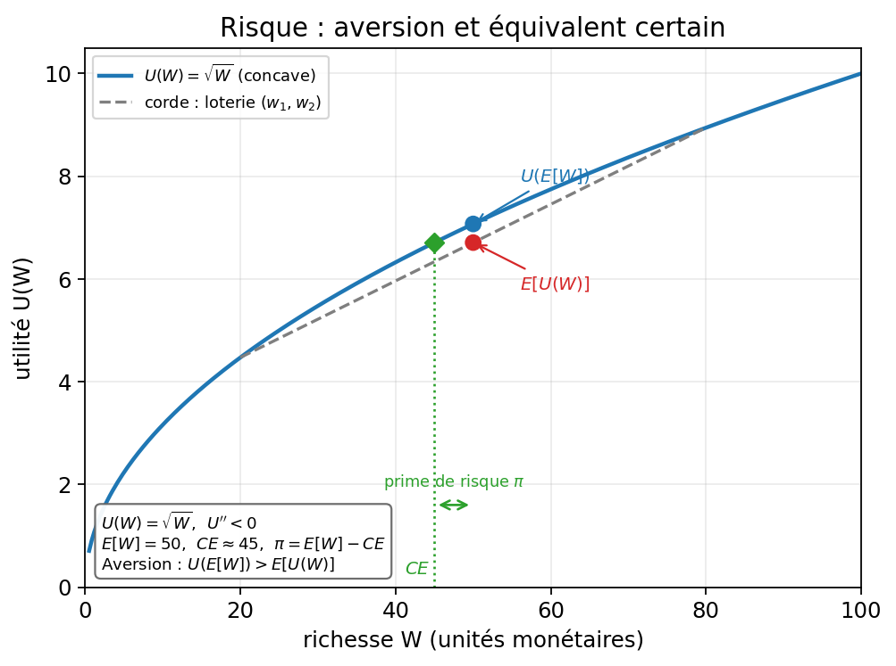
Trois fonctions d’utilité et attitudes face au risque
Ce graphique illustre comment la courbure de la fonction d’utilité détermine l’attitude face au risque. Pour une loterie \((x_1=1, x_2=3, p=0{,}5)\) d’espérance \(E[X]=2\) :
- Utilité concave (\(U'' < 0\)) : \(U(E[X]) > E[U(X)]\) → aversion au risque ; la prime de risque \(\pi = E[X] - CE > 0\) mesure le coût psychologique du risque.
- Utilité linéaire (\(U'' = 0\)) : \(U(E[X]) = E[U(X)]\) → neutralité au risque.
- Utilité convexe (\(U'' > 0\)) : \(U(E[X]) < E[U(X)]\) → goût pour le risque ; l’individu paierait pour jouer.
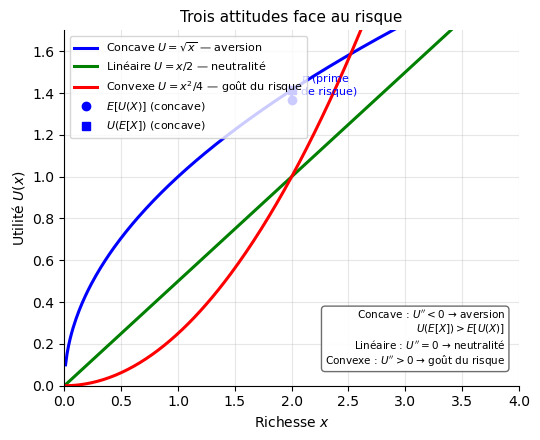
Les quatre cas gains/pertes (Théorie des perspectives)
La théorie des perspectives prédit des attitudes opposées selon le domaine (gains vs pertes) et le niveau de probabilité (forte vs faible). Ce tableau de quatre quadrants illustre les comportements attendus : aversion au risque dans les gains à forte probabilité (on préfère encaisser plutôt que jouer), goût pour le risque dans les pertes à forte probabilité (on préfère jouer pour éviter la perte certaine), et inversement à faible probabilité.
C:\Users\cdiet\AppData\Local\Temp\ipykernel_19564\3664955462.py:9: UserWarning: The figure layout has changed to tight
plt.tight_layout()
Fonction de valeur — Théorie des perspectives (Kahneman & Tversky, 1979)
La fonction de valeur a une forme en S asymétrique : concave au-dessus du point de référence (gains) et convexe en dessous (pertes). Deux propriétés clés :
- Aversion aux pertes : une perte d’un euro est psychologiquement plus douloureuse qu’un gain d’un euro n’est agréable (\(\lambda \approx 2{,}25\)) ;
- Sensibilité décroissante : l’impact marginal d’un gain ou d’une perte diminue avec son ampleur — dans les deux directions.
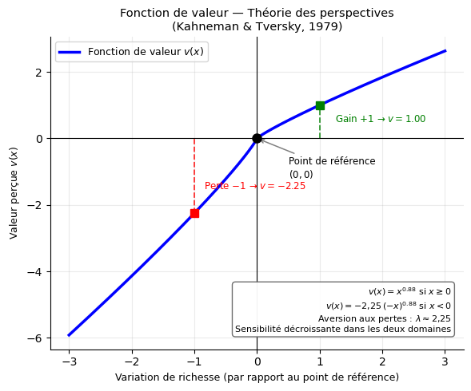
Synthèse graphique — 21 schémas canoniques
Digest de révision express. Chaque entrée tient en 3 lignes : axes, logique mécanique, formule de poche, piège unique. À lire en moins de 2 minutes.
G1 · Carte d’indifférence
Axes \(x_1\) (horizontal) / \(x_2\) (vertical) — Figure courbes décroissantes et convexes ; plus loin de l’origine = préféré
Formule \(U(x_1,x_2)=\bar U\) — décroissante car \(dx_2/dx_1=-U_1'/U_2'<0\) ; convexe car TMS décroissant
Piège l’utilité est ordinale ; « \(U=20\) est deux fois mieux que \(U=10\) » n’a aucun sens
G2 · Substituts parfaits / Compléments parfaits
Substituts droites de pente \(-a/b\) — TMS constant — optimum forcément en coin (tout l’un ou tout l’autre)
Compléments L inversé — optimum au coude : \(ax_1=bx_2\) — la condition de tangence ne s’applique pas
Piège utiliser \(U_1'/U_2'=p_1/p_2\) pour ces deux cas ; les solutions analytiques sont différentes
G3 · Rotation de la contrainte budgétaire
Axes \(x_1\) / \(x_2\) — Figure baisse de \(p_1\) → pivot vers l’extérieur autour du point \((0,\,R/p_2)\)
Pente \(-p_1/p_2\) ; intercepts \(R/p_1\) et \(R/p_2\) — seul l’intercept horizontal bouge
Piège confondre translation (variation de \(R\) : les deux intercepts bougent) et rotation (variation d’un \(p_i\))
G4 · Optimum du consommateur
Axes \(x_1\) / \(x_2\) — Figure tangence entre la CI la plus haute atteignable et la droite budgétaire
Formule \(U_1'/U_2'=p_1/p_2\) ; Cobb-Douglas : \(x_i^*=\frac{a_i}{a_1+a_2}\cdot\frac{R}{p_i}\)
Piège appliquer la tangence sans vérifier que l’optimum n’est pas en coin
G5 · Demande et élasticité-prix
Axes \(x\) (horizontal) / \(p\) (vertical) — Figure courbe plus plate = demande plus élastique
Formule \(\varepsilon_{x,p}=(\partial x/\partial p)\cdot(p/x)<0\) — varie le long d’une courbe linéaire
Piège croire que pente constante = élasticité constante (faux : \(\varepsilon\) change selon le point sur la courbe)
G6 · Courbes d’Engel
Axes \(R\) (horizontal) / \(x\) (vertical) — Figure pente positive = normal ; pente négative = inférieur
Formule \(\varepsilon_{x,R}=(\partial x/\partial R)\cdot(R/x)\) — loi d’Engel agrégée : \(\sum_i s_i\varepsilon_{x_i,R}=1\)
Piège une courbe d’Engel décroissante = inférieur, pas forcément Giffen (Giffen exige aussi une réaction au prix)
G7 · Préférences révélées
Axes \(x_1\) / \(x_2\) — Figure A choisi alors que B accessible → \(A\succeq^R B\) ; zone WARP en grisé
Axiome WARP si \(A\) est révélé préféré à \(B\), on ne doit jamais observer \(B\) choisi quand \(A\) est accessible
Piège inférer une préférence universelle à partir d’un seul contexte budgétaire — les préférences peuvent changer
G8 · Décomposition Slutsky-Hicks
Axes \(x_1\) / \(x_2\) — Figure A (initial) \(\to\) B (effet substitution) \(\to\) C (effet revenu)
Formule \(\partial x_i/\partial p_j=\partial h_i/\partial p_j - x_j\cdot\partial x_i/\partial R\) — effet substitution propre \(\partial h_i/\partial p_i\leq 0\) toujours
Piège croire que les deux effets vont toujours dans le même sens (vrai pour bien normal, faux pour inférieur)
G9 · Arbitrage travail-loisir
Axes \(L\) loisir (horizontal) / \(C\) consommation (vertical) — Figure pente \(=-w\) ; dotation en \((T,R_0)\)
Formule \(C=R_0+w(T-L)\) ; optimum \(TMS_{L,C}=w\) — hausse de \(w\) : effet subst. ↑ travail, effet revenu ↓ travail
Piège conclure qu’une hausse de salaire augmente forcément l’offre de travail — la courbe peut se retourner
G9b · Offre de travail rétro-courbée
Axes \(h\) heures (horizontal) / \(w\) salaire (vertical) — Figure courbe croissante puis décroissante après \(w^*\)
Formule \(h^*(w)=2+0{,}8w-0{,}025w^2\) ; \(\varepsilon_{h,w}=\partial h/\partial w\cdot w/h\) — négatif au-delà de \(w^*\)
Piège conclure que l’offre est toujours croissante — l’effet revenu peut dominer à haut salaire
G10 · Choix intertemporel
Axes \(C_1\) (horizontal) / \(C_2\) (vertical) — Figure pente \(=-(1+r)\) ; dotation \((Y_1,Y_2)\) toujours sur la droite
Formule \(C_1+C_2/(1+r)=Y_1+Y_2/(1+r)\) ; optimum \(TMS_{C_1,C_2}=1+r\)
Piège oublier que l’effet d’une hausse de \(r\) est opposé pour un épargnant et un emprunteur
G10b · Courbe d’épargne
Axes \(r\) taux d’intérêt (horizontal) / \(S=Y_1-C_1\) épargne (vertical) — Figure hump-shaped pour l’épargnant
Logique épargnant : effet subst. \(S\uparrow\) et effet revenu \(S\downarrow\) — résultat ambigu ; emprunteur : \(\uparrow r\) comprime \(C_1\)
Piège supposer que \(\uparrow r\) augmente toujours l’épargne — dépend du statut (épargnant vs emprunteur)
G11 · Capital humain : durée optimale d’étude
Axes \(s\) durée (horizontal) / valeur marginale (vertical) — Figure \(s^*\) à l’intersection \(CM=RM\) actualisé
Logique raisonner à la marge et en valeur actualisée ; coût = direct + opportunité (salaire renoncé)
Piège comparer des montants bruts sans actualiser, ou oublier le coût d’opportunité
G11b · Variantes CM/RM
Axes \(s\) durée (horizontal) / valeur marginale (vertical) — Figure trois paires CM/RM → trois \(s^*\) différents
Logique CM\(\uparrow\) → \(s^*\downarrow\) ; RM\(\uparrow\) → \(s^*\uparrow\) ; \(r\uparrow\) → RM actualisé \(\downarrow\) → \(s^*\downarrow\)
Piège oublier qu’une hausse du taux d’intérêt agit via le RM actualisé, pas via le coût marginal direct
G12 · Espérance d’utilité et risque
Axes \(W\) richesse (horizontal) / \(U(W)\) utilité (vertical) — Figure courbe concave → aversion au risque
Formule \(U(\mathbb{E}[W])>\mathbb{E}[U(W)]\) ; équivalent certain \(CE\) : \(U(CE)=\mathbb{E}[U(W)]\) ; prime \(\pi=\mathbb{E}[W]-CE\)
Piège confondre espérance de gain (monétaire) et espérance d’utilité — ce sont deux grandeurs distinctes
G12b · Trois attitudes face au risque
Axes \(x\) richesse (horizontal) / \(U(x)\) utilité (vertical) — Figure trois courbes : concave, linéaire, convexe
Logique concave → aversion (\(U''<0\)) ; linéaire → neutralité (\(U''=0\)) ; convexe → goût (\(U''>0\))
Piège penser que l’attitude est toujours la même — la théorie des perspectives montre qu’elle dépend du domaine
G13 · Quatre cas gains/pertes (Kahneman-Tversky)
Axes montant (horizontal) / valeur ou utilité (vertical) — Figure 4 quadrants selon domaine × probabilité
Logique gains/forte prob. → aversion ; gains/faible prob. → goût ; pertes/forte prob. → goût ; pertes/faible prob. → aversion
Piège appliquer une attitude homogène au risque — la théorie EU ne prédit pas ces retournements
G14 · Fonction de valeur (Kahneman-Tversky)
Axes variation de richesse (horizontal) / valeur perçue \(v(x)\) (vertical) — Figure courbe en S asymétrique
Formule \(v(x)=x^{0.88}\) si \(x\geq 0\) ; \(v(x)=-2{,}25\,(-x)^{0.88}\) si \(x<0\) — aversion aux pertes \(\lambda\approx 2{,}25\)
Piège confondre cette fonction de valeur définie sur les variations avec une fonction d’utilité définie sur les niveaux
Schémathèque récapitulative
Usage révision express : lire d’abord la formule-clé, retrouver mentalement la logique graphique, vérifier dans le chapitre si besoin.
| # | Graphique | Chapitre | Formule-clé mémorisable |
|---|---|---|---|
| G1 | Carte d’indifférence | Ch. 2 | \(U(x_1,x_2)=\bar U\) |
| G2 | Substituts / Compléments parfaits | Ch. 3 | \(U=ax_1{+}bx_2\) / \(U=\min(ax_1,bx_2)\) |
| G3 | Rotation de la contrainte | Ch. 4 | pente \(=-p_1/p_2\) ; intercept horizontal \(=R/p_1\) |
| G4 | Optimum du consommateur | Ch. 5 | \(U_1'/U_2'=p_1/p_2\) |
| G5 | Demande et élasticité | Ch. 7 | \(\varepsilon_{x,p}=\frac{\partial x}{\partial p}\cdot\frac{p}{x}\) |
| G6 | Courbes d’Engel | Ch. 9 | \(\varepsilon_{x,R}=\frac{\partial x}{\partial R}\cdot\frac{R}{x}\) |
| G7 | Préférences révélées | Ch. 10 | WARP |
| G8 | Slutsky-Hicks | Ch. 8 | \(\frac{\partial x_i}{\partial p_j}=\frac{\partial h_i}{\partial p_j}-x_j\frac{\partial x_i}{\partial R}\) |
| G9 | Travail-loisir (optimum) | Ch. 11 | \(TMS_{L,C}=w\) |
| G9b | Offre rétro-courbée | Ch. 11 | \(\varepsilon_{h,w}=\frac{\partial h}{\partial w}\cdot\frac{w}{h}\) — change de signe en \(w^*\) |
| G10 | Choix intertemporel | Ch. 12 | \(TMS_{C_1,C_2}=1+r\) |
| G10b | Courbe d’épargne | Ch. 12 | \(S=Y_1-C_1\) — hump pour l’épargnant |
| G11 | Capital humain (optimum) | Ch. 13 | \(s^*\) : \(CM(s^*)=RM_{actualisé}(s^*)\) |
| G11b | Variantes CM/RM | Ch. 13 | \(CM\uparrow \Rightarrow s^*\downarrow\) ; \(RM\uparrow \Rightarrow s^*\uparrow\) |
| G12 | Espérance d’utilité / aversion | Ch. 14 | \(U(\mathbb{E}[W])>\mathbb{E}[U(W)]\) |
| G12b | Trois attitudes face au risque | Ch. 14 | \(U''<0\) aversion ; \(U''=0\) neutre ; \(U''>0\) goût |
| G13 | Quatre cas gains/pertes | Ch. 14 | KT : attitude dépend du domaine × probabilité |
| G14 | Fonction de valeur KT | Ch. 14 | \(v(x)=x^{0.88}\) / \(-2{,}25(-x)^{0.88}\) ; \(\lambda\approx 2{,}25\) |
Formulaire concours
Préférences et utilité
\[ A \succeq B \Longleftrightarrow U(A) \geq U(B) \]
\[ TMS_{1,2}=\frac{U_1'}{U_2'} \]
Pente d’une courbe d’indifférence :
\[ \frac{dx_2}{dx_1}\bigg|_{\bar U}=-\frac{U_1'}{U_2'} \]
Budget
\[ p_1x_1+p_2x_2=R \]
\[ x_2=\frac{R}{p_2}-\frac{p_1}{p_2}x_1 \qquad \text{pente }=-\frac{p_1}{p_2} \]
Optimum
\[ \frac{U_1'}{U_2'}=\frac{p_1}{p_2} \]
Avec Cobb-Douglas \(U=x_1^a x_2^b\) :
\[ x_1^*=\frac{a}{a+b}\frac{R}{p_1} \qquad x_2^*=\frac{b}{a+b}\frac{R}{p_2} \]
Part budgétaire constante : \(p_i x_i^*/R = a_i/(a_1+a_2)\) — propriété caractéristique de Cobb-Douglas.
Élasticités
\[ \varepsilon_{x,p}=\frac{\partial x}{\partial p}\frac{p}{x} \qquad \varepsilon_{x,R}=\frac{\partial x}{\partial R}\frac{R}{x} \qquad \varepsilon_{x_i,p_j}=\frac{\partial x_i}{\partial p_j}\frac{p_j}{x_i} \]
Loi d’Engel agrégée : \(\displaystyle\sum_i s_i\,\varepsilon_{x_i,R}=1\) avec \(s_i=p_ix_i/R\) (part budgétaire du bien \(i\)).
Homogénéité de degré 0 : \(x_i(\lambda p_1,\lambda p_2,\lambda R)=x_i(p_1,p_2,R)\) — seuls les prix relatifs et le revenu réel comptent.
Slutsky
\[ \frac{\partial x_i}{\partial p_j} = \frac{\partial h_i}{\partial p_j} - x_j \frac{\partial x_i}{\partial R} \]
Propriétés de la matrice de Slutsky \(S_{ij}=\partial h_i/\partial p_j\) :
- Symétrie : \(S_{ij}=S_{ji}\) — les effets substitution croisés sont égaux.
- Négativité propre : \(S_{ii}=\partial h_i/\partial p_i\leq 0\) — toujours, quel que soit le type de bien.
Travail-loisir
\[ C=R_0+w(T-L) \qquad TMS_{L,C}=w \]
Élasticité de l’offre de travail :
\[ \varepsilon_{h,w}=\frac{\partial h}{\partial w}\cdot\frac{w}{h} \]
Positif si effet substitution domine, négatif si effet revenu domine (offre rétro-courbée).
Intertemporel
\[ C_1+\frac{C_2}{1+r}=Y_1+\frac{Y_2}{1+r} \qquad TMS_{C_1,C_2}=1+r \]
Valeur actualisée d’un flux :
\[ VA=\sum_{t=0}^{T}\frac{Y_t}{(1+r)^t} \]
Revenu permanent (Friedman, 1957) :
\[ Y=Y^P+Y^T \qquad C=\alpha Y^P,\quad 0<\alpha<1 \]
Choc transitoire → surtout épargne ; hausse permanente → consommation.
Capital humain
\[ s^*\text{ tel que } CM(s^*)=RM_{\text{actualisé}}(s^*) \]
Condition de rentabilité :
\[ \sum_{t=1}^{T}\frac{\Delta Y_t}{(1+r)^t}\geq C_0 \]
Risque — Espérance d’utilité
\[ E[U(X)]=\sum_i p_i U(x_i) \qquad U(CE)=E[U(X)] \qquad \pi=E[X]-CE \]
Aversion au risque ⟺ \(U''<0\) ⟺ \(U(\mathbb{E}[W])>\mathbb{E}[U(W)]\).
Indice d’Arrow-Pratt : \(r_A(W)=-U''(W)/U'(W)\) — mesure locale de l’aversion au risque.
Risque — Théorie des perspectives (Kahneman-Tversky, 1979)
Fonction de valeur :
\[ v(x)=\begin{cases}x^\alpha & \text{si }x\geq 0\\ -\lambda\,(-x)^\alpha & \text{si }x<0\end{cases} \qquad \alpha\approx 0{,}88,\quad\lambda\approx 2{,}25 \]
- \(\lambda > 1\) : aversion aux pertes (\(|v(-x)|>|v(x)|\))
- Concave sur les gains, convexe sur les pertes → sensibilité décroissante
- Pondération des probabilités : \(\pi(p)\neq p\) — sur-pondération des événements rares
Erreurs fréquentes à éviter
Confondre utilité ordinale et cardinalité.
Une utilité deux fois plus élevée ne signifie pas deux fois plus de bonheur. Toute transformation croissante de \(U\) représente les mêmes préférences.Oublier le signe de la pente de la courbe d’indifférence.
La pente est négative : \(-U_1'/U_2'\). Le TMS est souvent donné en valeur positive ; préciser la convention retenue en copie.Écrire seulement \(TMS=p_1/p_2\) sans vérifier l’optimum intérieur.
Cette condition de tangence ne vaut pas en coin ni pour les cas de substituts ou compléments parfaits.Dire que tout bien inférieur est Giffen.
Faux : un bien Giffen est inférieur et son effet revenu domine l’effet substitution. C’est un cas extrême et rare.Confondre effet substitution et effet revenu.
L’effet substitution propre (\(\partial h_i/\partial p_i\)) est toujours négatif ou nul. L’effet revenu peut aller dans n’importe quel sens selon le type de bien.Oublier que l’offre de travail peut diminuer quand le salaire augmente.
Cela arrive si l’effet revenu (plus riche → consomme plus de loisir) domine l’effet substitution (loisir plus coûteux → travaille davantage).Confondre espérance de l’utilité et utilité de l’espérance.
En risque : \(E[U(X)]\neq U(E[X])\) en général. C’est précisément cet écart qui mesure l’aversion au risque.Oublier le coût d’opportunité dans la décision d’étude.
Étudier coûte le salaire auquel on renonce. Ne comparer que les coûts directs (frais, livres) sous-estime le vrai coût.Confondre demande marshallienne et demande hicksienne.
La demande marshallienne \(x_i(p,R)\) est observée à revenu constant. La demande hicksienne \(h_i(p,U)\) est compensée à utilité constante. Seule \(\partial h_i/\partial p_i\) est garantie négative ; \(\partial x_i/\partial p_i\) peut être positive (bien Giffen).Croire que l’élasticité-prix est constante le long d’une courbe de demande linéaire.
Pour \(x=a-bp\), l’élasticité \(\varepsilon=-bp/x\) varie selon le point : infinie quand \(x\to 0\), nulle quand \(p\to 0\). Seule une courbe iso-élastique (\(x=Ap^\varepsilon\)) a une élasticité constante.Confondre rendement moyen et rendement marginal en capital humain.
C’est le rendement marginal actualisé d’une année supplémentaire (et non le rendement moyen du diplôme) qui guide la décision d’arrêter ou de prolonger les études. Comparer les deux conduit à des conclusions erronées sur la durée optimale \(s^*\).Confondre le modèle d’espérance d’utilité (Von Neumann-Morgenstern) et la théorie des perspectives.
Le modèle EU prédit une attitude homogène face au risque selon la courbure globale de \(U\) (concave → toujours averse). La théorie des perspectives prédit des attitudes opposées selon le domaine (gains vs pertes) et la probabilité (forte vs faible). Appliquer EU là où les perspectives s’appliquent conduit à de fausses prédictions comportementales.
Checklist de couverture des notes
Cette version couvre les blocs visibles dans le zip :
- relation de préférence, axiomes, monotonie, convexité ;
- fonction d’utilité, utilité ordinale, transformations croissantes ;
- courbes d’indifférence, impossibilité de croisement, carte d’indifférence ;
- utilités marginales, TMS, TMS décroissant ;
- substituts parfaits, compléments parfaits, biens neutres, indésirables, satiété ;
- contrainte budgétaire, pente, effet du revenu, effet du prix ;
- programme de maximisation, Lagrangien, condition de tangence, optimum en coin ;
- demande individuelle, courbe prix-consommation, courbe revenu-consommation, courbe d’Engel ;
- élasticité-prix, élasticité-revenu, élasticité croisée, recette ;
- biens normaux, inférieurs, nécessaires, de luxe, Giffen ;
- décomposition Hicks/Slutsky, effet substitution, effet revenu, équation de Slutsky ;
- préférences révélées et cohérence des choix ;
- arbitrage travail-loisir, salaire de réserve, offre de travail rétro-courbée, élasticité de l’offre de travail ;
- construction de la courbe d’offre individuelle, salaire de retournement \(w^*\) ;
- économie de la famille : Becker (1965), Gronau (1977), boîte d’Edgeworth du ménage ;
- choix intertemporel, valeur actualisée, épargne/emprunt, effet du taux d’intérêt ;
- courbe d’épargne individuelle, épargnant vs emprunteur ;
- revenu permanent (Friedman, 1957) : \(Y^P\) et \(Y^T\), lissage de la consommation ;
- cohérence temporelle, biais de présent, incohérence temporelle ;
- capital humain, coût direct, coût d’opportunité, durée optimale d’étude ;
- modèle de Becker, taux de rendement interne, condition \(CM=RM\) actualisé ;
- variantes CM/RM : effet de la hausse des coûts, du rendement, du taux d’actualisation ;
- hétérogénéité des durées optimales : 7 facteurs (coûts, salaire renoncé, rendement, patience, crédit, risque, origine sociale) ;
- choix en univers risqué, espérance d’utilité, aversion au risque, équivalent certain, prime de risque, assurance ;
- trois attitudes face au risque : \(U''<0\), \(U''=0\), \(U''>0\) ; implications graphiques ;
- théorie des perspectives (Kahneman-Tversky, 1979) : point de référence, aversion aux pertes, sensibilité décroissante ;
- fonction de valeur en S asymétrique ; surpondération des petites probabilités ;
- quatre cas gains/pertes : attitudes opposées selon domaine × niveau de probabilité.
Passages manuscrits parfois peu lisibles : certaines annotations marginales et quelques exemples numériques isolés. Les concepts centraux correspondants ont été reconstruits selon la version standard du cours.
Vérification
Nombre de graphiques générables dans le notebook : 21 (15 graphiques originaux + 6 nouveaux graphiques V6 : offre rétro-courbée, courbe d’épargne, variantes CM/RM, trois attitudes face au risque, quatre cas gains/pertes, fonction de valeur Kahneman-Tversky) + 1 tableau de bord de synthèse si toutes les cellules sont exécutées.
Comment lire ce cours vite
Si tu manques de temps, garde toujours le même ordre de lecture dans chaque chapitre :
Pour un premier passage : l’objectif n’est pas de tout mémoriser d’un coup. Il faut d’abord comprendre le mécanisme économique, puis fixer les formules utiles.